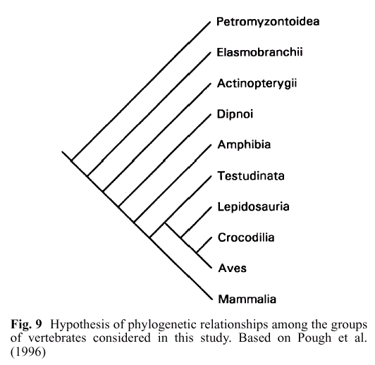
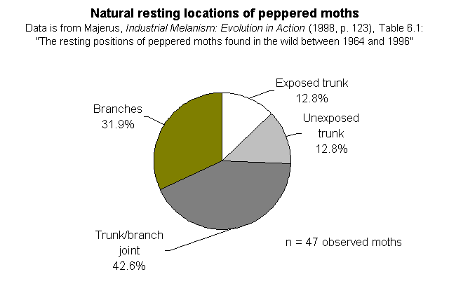
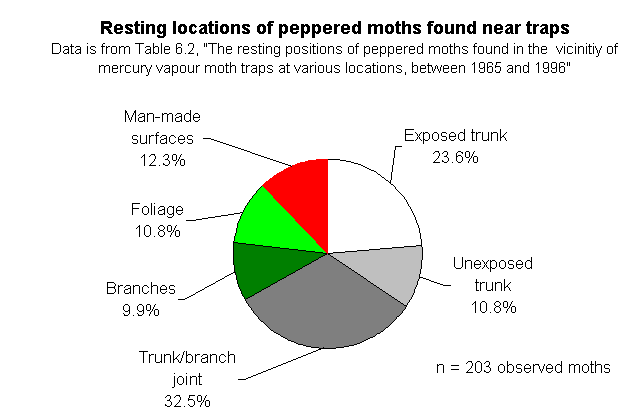
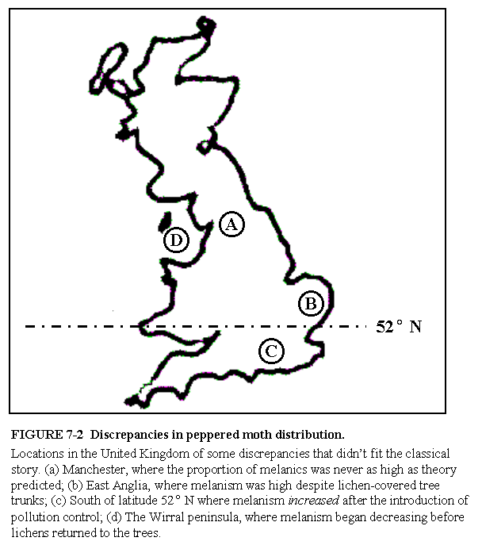
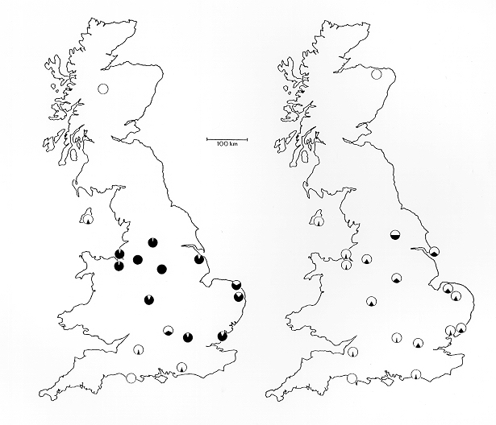

| Otros enlaces: Los enlaces externos en este documento se abren en nuevas ventanas.
|
Contenido
También consulte el Íconos de la Evolución Preguntas frecuentes para más artículos y enlaces sobre este tema.
Una crítica capítulo por capítulo de Íconos de la Evolución:
- Capítulo 2: El experimento de Miller-Urey
- Capítulo 3: El árbol de la vida de Darwin
- Capítulo 4: Homología en las extremidades de los vertebrados
- Capítulo 5: Los embriones de Haeckel
- Capítulo 6: Archaeopteryx -- El eslabón perdido
- Capítulo 7: Polillas del hollín
- Los lugares de descanso natural de las polillas del hollín -- datos de Majerus
- Fotografías de polillas del hollín, escenificadas y de otro modo
- ¿Cuáles son las implicaciones si las polillas descansan con más frecuencia debajo de las ramas?
- La literatura científica
- La revisión de Wells por Bruce Grant
- La revisión de Wells por M.E.N. Majerus
- De polillas y mapas
- Capítulo 8: Las pinzuelas de Darwin
- Capítulo 9: Moscas de la fruta de cuatro alas
- Capítulo 10: Caballos fósiles y evolución dirigida
- Capítulo 11: Del mono al humano: El ícono definitivo
- Conclusiones
- Agradecimientos
- Referencias
- Notas al final
Introducción
El libro de Jonathan Wells Icons of Evolution: Science or Myth? Why Much of What We Teach About Evolution Is Wrong (de ahora en adelante Icons) convierte en una burla la noción de una investigación honesta. Alegando documentar que "los estudiantes y el público están siendo sistemáticamente desinformados sobre la evidencia de la evolución" (p. XII) a través de temas comunes de los libros de texto como las polillas melanizadas, las similitudes embrionarias y los homínidos fósiles [2], Icons contiene en realidad una gran cantidad de sus propios errores. Esto no es original -- los creacionistas han estado cometiendo errores sobre la evolución durante años. Sin embargo, de manera nueva y más insidiosa, Icons contiene numerosos casos de distorsiones injustas de la opinión científica, generadas por las tácticas pseudocientíficas de la citación selectiva de científicos y evidencia, la extracción de citas (quote-mining) y el "truco argumentativo", siendo este último la táctica de Wells de rellenar sus discusiones temáticas con una editorialización sesgada e incesante. Wells mezcla estos ingredientes con algunos fragmentos de ciencia precisos (siempre incompletos) y procede a enlazar, a menudo de una manera lógicamente arbitraria, una narrativa cuidadosamente elaborada para dar la apariencia de un caso honesto a favor de la acusación difamatoria central de Wells: que los biólogos de la corriente principal son "darwinistas dogmáticos que distorsionan la verdad para mantenerse en el poder" (pp. 242-243).
Este ensayo demostrará que es el libro de Wells Icons el que está lleno de falsas representaciones.
El pilar central del argumento de Wells es este:
"Algunos biólogos son conscientes de las dificultades con un icono particular porque distorsiona la evidencia en su propio campo. Cuando leen la literatura científica en su especialidad, pueden ver que el icono es engañoso o simplemente falso. Pero pueden sentir que esto es solo un problema aislado, especialmente cuando se les asegura que la teoría de Darwin está respaldada por una evidencia abrumadora de otros campos. Si creen en la corrección fundamental de la evolución darwiniana, pueden apartar sus dudas sobre el icono particular sobre el cual saben algo." (Icons, pp. 7-8)
En otras palabras, Wells argumenta que los especialistas conocen los problemas en su campo de especialidad, pero que todos piensan que la evidencia que apoya la evolución está en otro lugar. Esto es simplemente falso, como veremos: los expertos en cada campo han expresado explícitamente que la evidencia en su campo apoya la teoría de la evolución, y además han respaldado sus afirmaciones con argumentos basados en la evidencia. Si la afirmación de Wells sobre los expertos es falsa, entonces el argumento de Wells se derrumba. A Wells le gusta hacer preguntas; ahora es momento de que él responda algunas.
Capítulo 2: Experimento de Miller-Urey
Oxígeno prebiótico. Una pregunta clave en la investigación sobre el origen de la vida es el estado de oxidación de la atmósfera prebiótica (la mejor estimación actual es que el origen de la vida ocurrió hace aproximadamente 4.0-3.7 mil millones de años). Wells quiere que pienses que hay buenas pruebas de cantidades significativas de oxígeno libre en la atmósfera prebiótica (cantidades significativas de oxígeno libre hacen que la atmósfera sea oxidante y hacen que los experimentos del tipo Miller-Urey fallen). Dedica varias páginas (14-19) a un falso debate sobre el tema del oxígeno, citando fuentes de los años 1970 y escribiendo que (p. 17) "la controversia nunca ha sido resuelta", que "La evidencia de las rocas tempranas ha sido inconclusa" y concluyendo que el consenso geológico actual —que el oxígeno fue simplemente un gas de rastro antes de aproximadamente 2.5 mil millones de años y solo comenzó a aumentar después de este punto— se debió a "El dogma [tomando] el lugar de la evidencia empírica" (p. 18). Ninguna de estas afirmaciones es verdadera (véase, por ejemplo, Copley, 2001).
-
Ciertos minerales, como la uraninita, no pueden formarse bajo una exposición significativa al oxígeno. Se encuentran depósitos gruesos de estas rocas en formaciones rocosas más antiguas que 2.5 mil millones de años, lo que indica que prácticamente no había oxígeno (solo cantidades trazas) presente. En la página 17, Wells señala que se han encontrado depósitos de uraninita en rocas más recientes, pero omite mencionar a sus lectores que estos solo ocurren bajo condiciones de enterramiento rápido, mientras que los depósitos antiguos de uraninita ocurren en condiciones de deposición lenta, por ejemplo en sedimentos depositados por ríos, de modo que los minerales estuvieron expuestos a los gases atmosféricos durante períodos significativos antes del enterramiento.
-
Los 'lechos rojos' son características geológicas que contienen hierro altamente oxidado (óxido) indicativo de grandes cantidades de oxígeno. Wells (p. 17) señala que los lechos rojos se encuentran antes de los 2 mil millones de años, pero falla en mencionar que el límite temporal de los lechos rojos es solo unos cientos de millones de años antes de los 2 mil millones de años.
-
Wells ni siquiera menciona la evidencia de que las formaciones de hierro en bandas (hierro incompletamente oxidado indicativo de condiciones de oxígeno ultrabajo) son muy comunes antes de los 2.3 mil millones de años y muy raras después.
-
Finalmente, Wells no menciona a sus lectores que los paleosuelos (fósiles de suelos) tempranos de hace aproximadamente ~2.5 mil millones de años contienen cerio no oxidado, algo imposible en una atmósfera oxigenada (por ejemplo, Murakami et al., 2001).
-
Por último, Wells no menciona a sus lectores que la pirita, un mineral aún más vulnerable a la oxidación que la uraninita, se encuentra no oxidada en rocas pre-2.5 mil millones de años, y con evidencia significativa de exposición prolongada a la superficie (es decir, granos erosionados por el agua; por ejemplo, Rasmussen y Buick, 1999).
¿Por qué Wells omite las líneas convergentes de evidencia geológica independientes que apuntan a una atmósfera anóxica temprana (pre ~2.5 bya)?
¿Era la atmósfera prebiótica reductora? ¿Son los experimentos de Miller-Urey "irrelevantes"? Los famosos experimentos de Miller-Urey utilizaron una atmósfera fuertemente reductora para producir aminoácidos. Es importante comprender que el experimento original es famoso no tanto por la mezcla exacta utilizada, sino por el descubrimiento inesperado de que un experimento tan sencillo podía producir, de hecho, compuestos biológicos cruciales; este descubrimiento impulsó una gran cantidad de investigación relacionada que continúa hasta hoy.
Actualmente, la opinión geoquímica predominante es que la atmósfera prebiótica no era tan fuertemente reductora como la atmósfera original de Miller-Urey, pero las opiniones varían ampliamente desde moderadamente reductora hasta neutra. Las atmósferas completamente neutras serían perjudiciales para los experimentos del tipo Miller-Urey, pero incluso una atmósfera débilmente reductora producirá cantidades menores pero significativas de aminoácidos. En las aproximadamente dos páginas de texto donde Wells discute realmente la cuestión de la atmósfera reductora (p. 20-22), Wells cita algunas fuentes de los años 70 y luego afirma que la irrelevancia del experimento de Miller-Urey se ha convertido en un "casi consenso entre los geoquímicos" (p. 21).
-
Esta afirmación es engañosa. Lo que están de acuerdo los geoquímicos es que si el manto de la Tierra primitiva tenía la misma composición que el manto moderno y si solo se consideran las fuentes volcánicas terrestres como contribuyentes a la atmósfera, y si el perfil de temperatura de la atmósfera primitiva era el mismo que el de la Tierra moderna (esto es relevante para las tasas de escape de hidrógeno) entonces habrá mucho menos hidrógeno en comparación con la primera atmósfera de Miller (20% de atmósfera total). Incluso si se acepta este escenario de peor caso, el hidrógeno no estará completamente ausente; de hecho, hay una larga lista de geoquímicos que consideran que el hidrógeno estuvo presente (aunque en cantidades menores, aproximadamente 0.1-1% de la atmósfera total). A estos niveles de H2 todavía hay una producción significativa (aunque mucho menor) de aminoácidos.
-
Además, muchos geoquímicos piensan que estas condiciones no representan la Tierra primitiva, contrario a la impresión dada por Wells. Por ejemplo, en la p. 20, Wells menciona volcanes terrestres que emiten gases neutros (H2O, CO2, N2, y solo trazas de H2), pero él falla en mencionar que los ventis de las dorsales oceánicas podrían haber sido fuentes significativas de gases reducidos; son fuentes importantes de gases atmosféricos reducidos incluso hoy, emitiendo aproximadamente 1% de metano (Kasting y Brown, 1998) y produciendo hidrógeno reducido y sulfuro de hidrógeno (por ejemplo, Kelley et al., 2001; Perkins, 2001; Von Damm, 2001) y potencialmente amoníaco prebiótico (Brandes et al., 1998; Chyba, 1998). ¿Por qué Wells excluye los ventis oceánicos de la consideración?
-
Otra omisión extraña es que Wells falla completamente en mencionar la evidencia extraterrestre, que es la única evidencia directa que tenemos de los tipos de reacciones químicas que podrían haber ocurrido en el sistema solar primitivo. Por ejemplo, él ignora mencionar el famoso meteorito de Murchison, que contiene mezclas de compuestos orgánicos muy similares a los producidos en experimentos de estilo Miller-Urey, y que constituye evidencia directa de que el tipo correcto de química prebiótica estaba ocurriendo al menos en algún lugar del sistema solar primitivo, y que algunos de esos productos encontraron su camino a la Tierra (véase, por ejemplo, Engel y Macko, 2001 para una revisión reciente).
-
Wells afirma que desde la década de 1970, las atmósferas no reductoras se han convertido en el "casi consenso". Sin embargo, el último artículo que Wells cita para apoyar esta visión es un artículo de noticias no técnico de 1995 en Science (Cohen, 1995). ¿Por qué no cita Kral et al. (1998), quienes escriben,
La teoría estándar para el origen de la vida postula que la vida surgió de una sopa de material orgánico producida abióticamente (por ejemplo, Miller, 1953; Miller, 1992). El primer organismo habría sido, por lo tanto, un heterótrofo que derivaba energía de este pool existente de nutrientes. Esta teoría para el origen de la vida no está exenta de competidores (para una revisión de teorías sobre los orígenes de la vida, véase Davis y McKay, 1996), pero ha recibido considerable apoyo de experimentos de laboratorio en los que se ha demostrado que los materiales orgánicos biológicamente relevantes pueden sintetizarse fácilmente a partir de mezclas de gases ligeramente reductoras (por ejemplo, Chang et al., 1983). El descubrimiento de orgánicos en cometas (por ejemplo, Kissel y Kruger, 1987), en Titán (por ejemplo, Sagan et al., 1984), en otras partes del sistema solar exterior (por ejemplo, Encrenaz, 1986), así como en el medio interestelar (por ejemplo, Irvine y Knacke, 1989) ha fortalecido aún más la noción de que el material orgánico era abundante antes del origen de la vida.
Nada de esto pretende dar la impresión de que no existen controversias (tanto Cohen (1995) como el artículo de Davis y McKay (1996) citado por el anteriormente mencionado Kral et al. (1998) tratan sobre las diversas hipótesis competidoras sobre el origen de la vida). Pero los libros de texto generalmente mencionan algunas de estas hipótesis (brevemente, por supuesto, ya que solo hay espacio para una o dos páginas sobre este tema en un libro de texto introductorio), y además generalmente mencionan que la atmósfera original probablemente era menos reductora que lo hipotetizado en el experimento original de Miller-Urey, pero que muchas variaciones con condiciones ligeramente reductoras aún producen resultados satisfactorios. Esto es exactamente lo que se escribe en el libro de texto de biología universitario más popular, Campbell et al.'s (1999) Biology, por ejemplo. En otras palabras, los libros de texto básicamente resumen lo que la literatura reciente está diciendo. El experimento original de Miller-Urey, a pesar de sus limitaciones, también es repetidamente citado en la literatura científica moderna como un experimento hito. Entonces, ¿por qué Wells tiene un problema con los libros de texto siguiendo la literatura? Wells quiere que los libros de texto sigan a los expertos, y parece que lo están haciendo.
El mundo del ARN. Wells escribe (p. 22) como si el mundo del ARN fuera una alternativa a los experimentos fallidos de estilo Miller-Urey. No cita ninguna fuente para esta afirmación, porque la afirmación es pura confusión.
-
La hipótesis del mundo del ARN es complementaria, no opuesta, a las síntesis prebióticas al estilo de Miller, ya que está diseñada para explicar cómo comenzó la replicación genética sin ADN, varios pasos más adelante después de las síntesis prebióticas.
-
Wells da la impresión de que solo hay dos posibles comienzos de la vida en la Tierra: síntesis al estilo Urey-Miller y el mundo del ARN. Wells cita de manera engañosa varias frases que, tomadas por separado, sugieren que el mundo del ARN es imposible y que no quedan explicaciones científicas para la vida en la Tierra. Sin embargo, la mayoría de las autoridades coinciden en que el mundo del ARN fue una etapa del origen de la vida, en lugar de la primera etapa, y que fue precedido por un mundo pre-ARN. De hecho, los propios autores que cita para sugerir que el mundo del ARN es imposible proceden a explicar el concepto de un mundo pre-ARN y cómo surgiría un mundo del ARN a partir de ese, pero Wells omite cualquier mención a esto. Wells no se cansó de citar trabajos recientes sobre precursores del mundo del ARN; véase, por ejemplo, Cavalier-Smith (2001) para una introducción y referencias a ideas sobre esto, como el 'mundo NA' y el 'mundo lipídico' (para este último, véase, por ejemplo, Segre et al., 2001).
Capítulo 3: El árbol de la vida de Darwin
Wells mezcla varios temas en este capítulo. Como vimos en el capítulo anterior, tratará varios temas de manera superficial e incompleta, generando dudas sobre cada uno y conectándolos entre sí, aunque no estén lógicamente relacionados.
La Explosión Cámbrica. Aquí Wells recorre un camino bien transitado por sus colegas creacionistas y del diseño inteligente. Como resultado, ya existe una literatura significativa disponible sobre la "aparición súbita de los filos animales, sin precursores y todos igualmente distantes entre sí"—una especie de controversia.
-
Consulte, por ejemplo, a Conway Morris (Conway Morris, 1998) para un debate autorizado, y Knoll y Carroll (1999), que está disponible gratuitamente en línea. Una perspectiva particularmente interesante es la de Keith B. Miller, geólogo, evolucionista y cristiano evangélico, quien escribió un artículo (1999) en Perspectives on Science and Christian Faith titulado "El registro fósil del Precámbrico al Cámbrico y las formas transicionales," ( http://www.asa3.org/ASA/topics/evolution/PSCF12-97Miller.html) en el que escribió,
Hay mucha confusión en la literatura popularizada sobre la evidencia de cambios macroevolutivos en el registro fósil. Desafortunadamente, el debate sobre la evolución dentro de la comunidad cristiana ha sido enormemente influenciado por presentaciones inexactas de los datos fósiles y de los métodos de clasificación. Críticas ampliamente leídas sobre la evolución, como Evolution: A Theory in Crisis de Denton, y Darwin on Trial. de Johnson, contienen serias distorsiones de la evidencia fósil disponible para las transiciones macroevolutivas y de la ciencia de la paleontología evolutiva. [...] La implicación de gran parte del comentario cristiano evangélico sobre la macroevolución es que los principales grupos taxonómicos de seres vivos permanecen como entidades claramente distintas a lo largo de su historia, y eran tan morfológicamente distintos entre sí en su primera aparición como lo son hoy. Existe un claro interés en mostrar la historia de la vida como discontinua, y cualquier sugerencia de transición en el registro fósil es recibida con gran escepticismo. El propósito de esta breve comunicación es disipar algunas de estas concepciones erróneas sobre la naturaleza e interpretación del registro fósil.
-
En la página 38 de Icons, Wells cita la página 30 del libro de Simon Conway Morris (1998), The Crucible of Creation, sobre la "demarcación nítida" en la explosión cámbrica. Pero Conway Morris escribe en la página inmediatamente siguiente (32-3): "El término 'explosión' no debe tomarse demasiado literalmente, sino en términos de evolución sigue siendo muy dramático. Lo que significa es la rápida diversificación de la vida animal. 'Rápido' en este caso significa unos pocos millones de años, en lugar de las decenas o incluso cientos de millones de años que son más típicos cuando consideramos la evolución en el registro fósil." Y, por supuesto, uno de los puntos centrales de todo el libro de Conway Morris es que la disparidad morfológica que emerge en el Cámbrico, a menudo invocada por Wells y colaboradores mediante la cita de personas como Stephen J. Gould, no es tan radical como los defensores del diseño inteligente o incluso como lo sería Gould. Existe un problema significativo al afirmar que los filos animales del Cámbrico son tan morfológicamente diversos como la fauna de hoy; en gran parte, esta percepción se debe a los conceptos algo arbitrarios de 'filo' y 'plan corporal'. Conway Morris escribe (p. 170) que "la extrañeza de los problemáticos animales cámbricos es realmente un artefacto humano, una construcción de nuestra imaginación." En las páginas 185-195 muestra que los fósiles Wiwaxia y Halkieria tienen una mezcla de características de diferentes filos (que, según el relato de Wells, no deberían existir), y muestra cómo estas formas transicionales conectan tres filos mayores muy 'disparates' entre sí: Mollusca, Brachiopoda y Annelida.
-
Para alguien que se pasa con derecho a juzgar a las figuras en los libros de texto, las figuras de Wells son atroces. Su Figura 3.4, "Registros fósiles reales de los principales filos animales vivos", pretende mostrar cuándo aparecen los varios filos animales en el registro fósil. Note que, nuevamente, Wells no cita ninguna fuente en sus notas para averiguar de dónde provienen sus cifras. Sin embargo, examinando un gráfico similar en el Museo de Paleontología en línea de la Universidad de California (UCMP, 2000), vemos que Wells ha omitido una serie de filos, a saber, la docena o más que no tienen registro fósil alguno o aparecen muy tarde en relación con los filos cámbricos. Notablemente, todos los filos ausentes son de cuerpo blando, pero si Wells admitiera que numerosos filos existieron sin ningún registro fósil en absoluto, debilitaría gravemente su argumento en la página 44 de que cualquier pequeño ancestro de cuerpo blando de los filos animales habría sido fosilizado si existiera. La figura de Wells también coloca a Rotifera y Phoronida como teniendo registros fósiles en el Cámbrico, lo cual podría ser correcto si la página del UCMP está desactualizada, pero Wells no da referencias para la figura, por lo que es imposible verificarlo.
Fitogenia molecular. El segundo argumento de Wells contra el Árbol de la Vida se refiere a la hipótesis del 'reloj molecular' —es decir, que la divergencia de secuencias de ADN o proteínas es lo suficientemente regular para fechar las antiguas separaciones entre linajes. Esta hipótesis está siendo cuestionada por los científicos, ya que la influencia de cosas como la selección natural puede alterar bien la tasa de cambio de la secuencia (por ejemplo, los venenos de caracol cono son un ejemplo fantástico de rápida divergencia de secuencia bajo presión selectiva; véase Espiritu et al., 2001). Y si estos cambios ocurren con frecuencia suficiente, entonces obtener fechas de reloj precisas, particularmente para eventos lejanos, será muy difícil. Sin embargo, esto es algo completamente diferente a determinar fitogenias moleculares, que es lo que Wells está tratando realmente de desmentir. Pero desafortunadamente para Wells, hay considerable evidencia de que estas fitogenias son confiables y están en bastante buen acuerdo con las fitogenias generadas a partir de otros datos. Sobre el tema general de la precisión en las fitogenias moleculares, véase Theobald 2002b y para el trabajo reciente sobre la evolución de filos y las fitogenias moleculares de metazoos, que están ciertamente no en crisis, véase artículos recientes en lugares Evolución y Desarrollo (por ejemplo, Collins y Valentine, 2001; Peterson y Eernisse, 2001).
-
La Figura 3.6 de Wells (p. 47) es risible. Representa filogenias moleculares como una comparación de cuatro (cuenta 'las) pares de bases entre tres organismos. Se ve así:
Secuencia de ADN Organismo 1 ATCGOrganismo 2 ATCTOrganismo 3 ATGT¿Por qué no pudo Wells al menos obtener un conjunto de datos real, como lo haría cualquier artículo o incluso un libro de texto? Tienes que comparar al menos unas docenas de pares de bases antes de poder ver la manera inquietante en que los organismos del mismo género coinciden mucho mejor que los organismos de diferentes clases (por ejemplo). Aquí, por ejemplo, hay una alineación de algunas secuencias de aminoácidos de citocromo C de varios organismos ( para discusión véase aquí). Si Wells estuviera interesado en darle a sus lectores un gráfico útil, podría haber encontrado fácilmente algo como este, publicado en un artículo de 1992 de la Journal of Molecular Evolution:
Una discusión del análisis de secuencias y la matemática de filogenias anidadas está aquí: www.talkorigins.org/faqs/comdesc/section1.html)Relaciones entre simios y humanos. El siguiente ejemplo proviene de los datos de secuencia de ADN mitocondrial de Horai et al. (1992, Journal of Molecular Evolution 35: 32-43). Se muestran solo pequeños bloques de datos de tres de los varios loci codificadores de proteínas y tRNA analizados (COI = locus de citocromo oxidasa I).
From locus: COI tRNALys. ATPase 8 position 2664 2671 4026 4036 4410 4418 | | | | | | Human ACACCATA ACTTTCACCGC AAAAAATTA Chimp ACACCATA ACTTTCACCGC AAAAAACTA Bonobo ACACCATA ACTTTCACCGC AAAAAACTA Gorilla CCACCACA ACATTCACCGC AAAAAACTT Orangutan CCACCACA ACATTCACTGC AAAACCCCA Gibbon CCACCATA ACATTCACCGC TAAACCCCA(Fuente de las secuencias y leyenda: http://www.homepage.montana.edu/~mlavin/b403/lec12.htm. Vea esa página, notas para un curso sobre evolución en Montana State, para una discusión adicional.)
-
Wells se dedica a un poco más de minar citas en la página 51, seleccionando algunos estudios de filogenias moleculares que parecen ridículos.
Incluso cuando diferentes moléculas pueden combinarse para dar un solo árbol, el resultado a menudo es extraño: un estudio de 1996 que utilizó 88 secuencias de proteínas agrupó a los conejiles con los primates en lugar de con los roedores; un análisis de 1998 de 13 genes en 19 especies animales colocó a los erizos de mar entre los cordados; y otro estudio de 1998 basado en 12 proteínas puso a las vacas más cerca de las ballenas que de los caballos.
Lo que Wells no te está diciendo es que algunos de estos resultados no son en realidad ridículos.
-
Las vacas, por ejemplo, son artiodáctilos que efectivamente se cree que están estrechamente relacionados con las ballenas, una sospecha que ha recibido una confirmación sorprendente de recientes descubrimientos de fósiles transicionales (véase la página web del descubridor Thewissen, http://darla.neoucom.edu/DEPTS/ANAT/Pakicetidnew.html).
-
Los erizos de mar (filo echinodermata) efectivamente se agrupan "entre los cordados" pero esto es porque son un grupo hermano de los cordados, no dentro de los cordados como sugiere Wells. Esta taxonomía es un hecho ampliamente aceptado (véase por ejemplo la página Bilatera del Árbol de la Vida, especialmente " deuterostomios", el grupo que incluye a los equinodermos y los cordados pero excluye a los organismos que mudan la piel como los artrópodos). El mismo artículo que cita Wells reconoce estas distinciones explícitamente.
-
El estudio de los conejiles y los roedores, por otro lado, tiene defectos metodológicos (aunque los dos grupos están efectivamente más distantly relacionados de lo que el no experto podría esperar). Todo esto se discute en detalle, con referencias, por el participante de talkorigins John Harshman.
-
El Raíz del Árbol de la Vida. El 'Árbol de la Vida' es la idea, más famosamente defendida por Darwin, de que toda la vida conocida desciende de un ancestro común y está conectada por un árbol filogenético:
"Las afinidades de todos los seres de la misma clase a veces han sido representadas por un gran árbol. Creo que esta metáfora habla en gran medida la verdad. Las ramitas verdes y brotantes pueden representar las especies existentes; y aquellas producidas durante cada año anterior pueden representar la larga sucesión de especies extintas. ... Como los brotes dan lugar mediante el crecimiento a nuevos brotes, y estos, si son vigorosos, se ramifican y superan en todas direcciones a muchas ramas más débiles, así por generación creo que ha sido con el Gran Árbol de la Vida, que llena con sus ramas muertas y rotas la corteza de la tierra, y cubre la superficie con sus ramificaciones siempre ramificadas y bellas." (Darwin, Origen de las Especies)
Esta idea ha sido recientemente implementada en la web de una manera espléndida. Consulte la Página de inicio del Proyecto Web del Árbol de la Vida.
En Icons, Wells aborda un debate científico reciente sobre si la transferencia lateral de genes ha alterado tanto los genomas antiguos que las ramas más profundas del árbol están mezcladas. Básicamente, algunos científicos han propuesto que la idea de un único "último ancestro común" debería ser reemplazada por la idea de un "último pool genético común" del cual gradualmente emergieron los tres dominios de la vida existentes -- eucariotas, arqueas y eubacterias, según un esquema de clasificación. Carl Zimmer (2001) describe esto como la idea de la 'Manglares de la Vida'. Wells (por supuesto) saca provecho de esto por todo lo que vale, proclamando el fin de la descendencia común y el 'desenraizamiento del árbol' y demás, pero está distorsionando las cosas.
- Este debate completo es, entre los científicos, sobre la parte más antigua del árbol, conocida como la ' raíz.' Aquí es donde convergen las líneas de los tres fundamentales ' dominios' de la vida. Aparte de ser el evento más remoto que estudiar cronológicamente, la cuestión de la raíz del árbol está grandemente complicada por la transferencia lateral de genes, por las diferentes tasas de evolución entre genes y líneas, por el hecho de que los eucariotas son el resultado de simbiosis entre arqueas y eubacterias, y por el hecho de que, por definición, el Árbol de la Vida no tiene un grupo externo, lo que crea problemas técnicos para colocar la raíz. Los científicos están intentando discernir los eventos más antiguos en la historia de la vida aquí, por lo que se pueden esperar complicaciones. Un artículo reciente que es altamente esceptico de gran parte del trabajo que Wells cita es Cavalier-Smith (2002).
-
Lo que Wells no señala es que esta controversia completa tiene muy poco que ver con la filogenia de eucariotas (que va bien, gracias, véase por ejemplo Baldauf et al., 2000), y nada que ver con la filogenia de metazoos (anteriormente discutido), todo lo cual permanecerá perfectamente tradicional y arbóreo sin importar quién gane el debate sobre la raíz del árbol. Para ver qué significa esto, vaya a la página del Árbol de la Vida (http://tolweb.org), si hace clic en el árbol, encontrará que la primera página lista los tres dominios. De qué trata el debate árbol vs. manglar. Si hace clic en eucariotas, ha entrado en la zona donde, independientemente del resultado del debate, parece que las filogenias permanecerán arbóreas -- en otras palabras, esencialmente todo el árbol mapeado. La Figura 3.8 de Wells (p. 53) es muy engañosa en este respecto -- toda la vida macroscópica, y una gran cantidad de vida microscópica, encaja en el árbol que se ramifica desde la 'mara molecular'.
-
En absoluto está claro cómo cualquiera de esto debería poner en cuestión la evolución -- Wells ciertamente no ha propuesto un modelo que explique las cosas mejor. Y el hecho de que los libros de texto no estén completamente al día con los debates científicos actuales no solo no es sorprendente, es la forma en que las cosas deberían ser. Esta controversia en particular está lejos de estar resuelta, y hasta que lo esté, no hay ventaja real de ponerla en los libros de texto. Incluso si el modelo 'manglar' es eventualmente aceptado, es bastante difícil ver cómo esto hace que "la descendencia con modificación de ancestros comunes...no sea siquiera una teoría bien respaldada" (Íconos, p. 58), ya que el debate habrá sido resuelto determinando cuáles son las verdaderas líneas de descendencia. Si resulta que nuestros ancestros más remotos son una comunidad de bacterias que intercambian genes en lugar de una sola (y se debe recordar que también es posible que una comunidad de bacterias que intercambian genes pueda haber descendido de una sola bacteria), entonces esto será significativo pero apenas algo que derroque la visión evolutiva de la vida. Y como se mencionó antes, hay buenas razones para pensar que el modelo tradicional del árbol funcionará básicamente incluso cerca de la raíz. Por ejemplo, Cavalier-Smith (2002) escribe,
"Las recientes preocupaciones de que la transferencia lateral es tan desbordante (Doolittle, 1999a, b) que nunca podremos reconstruir los árboles de organismos son ciertamente falsas para eucariotas y probablemente incorrectas para bacterias. Estoy de acuerdo con Doolittle (2000) de que el árbol ampliamente aceptado necesita ser desarraigado, no debido a la transferencia lateral, que no confunde seriamente con respecto a la raíz, sino porque la evolución cuántica causó un malenraizamiento del árbol de parálogos. Podemos replantarlo seguramente como se muestra en las Figs 1, 2 y 7. La idea de que la composición del genoma en el cenozoario fue tan fluida (Woese, 1998, 2000) que no podemos usar argumentos cladísticos para reconstruirlo es más profundamente errónea, basándose en las malinterpretaciones básicas del árbol universal y la significación evolutiva y el momento de las diferencias entre eubacterias y neomura explicadas anteriormente. Ha estado claro durante mucho tiempo (Cavalier-Smith, 1981, 1987a, b, 2001) que el cenozoario era un eubacterio normal, no un progenote. Como Woese (1998, 2000) y Doolittle reconocen, los genes más fácilmente transferidos no son una muestra aleatoria de todo, sino que obedecen ciertas reglas (Rivera et al., 1998; Jain et al., 1999; Martin, 1999)." (Cavalier-Smith, 2002, p. 62)
La historia del paleontólogo chino. En la última página de este capítulo de Icons (p. 58), Wells relata su historia de un paleontólogo chino sin nombre que visitó los EE. UU. en 1999 y que Wells cita diciendo: "En China podemos criticar a Darwin, pero no al gobierno; en América, puedes criticar al gobierno, pero no a Darwin." Dada la experiencia pasada con anécdotas antievolutivas, se debe sospechar fuertemente que hay más en esta historia de la que Wells nos está contando.
-
Esto es particularmente cierto si se lee el relato de Nigel Hughes (Departamento de Ciencias de la Tierra, Universidad de California, Riverside) sobre un pequeño simposio celebrado en junio de 1999 en China, donde recientemente se han descubierto muchos fósiles de metazoos tempranos bien conservados. Hughes dice que la reunión, el "Simposio Internacional sobre el Origen de los Planos Corporales de los Animales y sus Registros Fósiles", fue organizada por el Profesor Jun-Yuan Chen -- aunque, como veremos a continuación, parece que el Instituto Discovery también jugó un papel significativo. Hughes fue uno de los aproximadamente 50 participantes del simposio.
Hughes informa sobre la reunión en la edición de marzo/abril de 2000 de la revista Evolución y Desarrollo (Vol. 2, Número 2, pp. 63-66). La mayor parte del informe son detalles típicos de una reunión científica, pero Hughes dedica los últimos párrafos de su informe a discutir las andanzas de Wells y sus colegas del Instituto Discovery:
El aspecto más curioso de la reunión y el más vergonzoso para los científicos occidentales (particularmente aquellos de los Estados Unidos) fue la presencia de individuos apoyados por el Instituto Discovery -- una fundación con sede en Seattle que proclama el diseño inteligente como una explicación científica para la diversidad biológica. La participación del Instituto sorprendió a los asistentes más convencionales, especialmente cuando se hizo evidente que el Instituto había jugado un papel clave en la organización de la conferencia, sin que la comunidad científica lo supiera. Varios ponentes presentaron charlas sobre este tema, cuya tesis principal parecía ser los antiguos argumentos pallianos envueltos en una variedad de vestiduras moleculares. Michael Denton habló sobre lo que veía como un fracaso de la genética para revelar una explicación universal para la forma biológica, Paul Nelson sobre genes de efecto materno, y Jonathan Wells sobre genes homóticos. Requiere valentía exponerse de esta manera ante una audiencia generalmente incrédula, pero también impone demandas especiales si la ciencia es su objetivo. Me sentí deprimido al descubrir que mi comprensión rudimentaria de la biología molecular era suficiente para detectar errores flagrantes, enviados francamente por Eric Davidson. La afirmación de Wells de que aspectos del control de los genes Hox, en lugar de proporcionar más evidencia de homología y ascendencia común, sugieren realmente que todos los filos de metazoos surgieron independientemente, da la idea de lo que se ofreció. Al hacerlo, negó efectivamente cualquier significado defendible en palabras como deuterosoma o ecdisozoos, taxones superiores bien establecidos que han sido erigidos sobre caracteres distintos a los genes que influyen en la identidad de los segmentos. Una afirmación audaz, pero una que no pudo defender razonablemente como se reveló. Denton se sintió consternado de que los sistemas bióticos fueran más complicados de lo que algunos genetistas habían esperado en la década de 1960, pero la conexión lógica entre esto y su creencia en diseños naturales inmutables quedó sin explicar. Y así continuó. Lo único nuevo aquí fue la presencia de estos argumentos en una reunión que ostensiblemente se presentó como científica.
¿Cómo se manejan tales situaciones? Los que hablaban fueron acompañados por una coterie de partidarios, incluyendo un "reportero cósmico" y, uno por uno, los científicos asistentes respondieron cortésmente sus preguntas. Muchos de nosotros, incluido yo mismo, aceptamos renuente ser entrevistados en cinta. Como invitados en China, se debía evitar una explosión pública mayor, pero mirando hacia atrás, desearía haber sido más agresivo. Todos estamos acostumbrados a debatir la ciencia, pero no estamos acostumbrados a decirle a la gente que sospechamos de sus motivos. Quizás tengamos que convertirnos en eso, porque la extensión, si la hay, a la que los colegas chinos habían sido informados sobre la naturaleza controvertida del Instituto Discovery y su agenda política dentro de los Estados Unidos, permaneció poco clara. Lo que estaba claro es que el Instituto Discovery está fomentando activamente a los científicos chinos, mediante financiación, para promover una visión de la fauna de Chengjiang a la que son simpatizantes.
Varios científicos chinos dieron presentaciones que enfatizaron la aparición repentina de filos, insinuando la necesidad de un nuevo mecanismo de "arriba-abajo" de la evolución -- música, por supuesto, para los oídos creacionistas. Aunque la fauna de Chengjiang nos recuerda con fuerza que muchos planos corporales estaban firmemente establecidos a principios del Cámbrico, no hace más que centrar la atención en las cosas interesantes que ocurrieron alrededor del límite Precámbrico/Cámbrico. La idea del "césped filogenético" apenas es nueva (recuerde, por ejemplo, el Wonderful Life de Gould), y es claramente una visión inexacta. Dada la generosa manera en que los científicos en la reunión explicaron esto y otras materias a los aliados del Instituto Discovery, es decepcionante encontrar comentarios en el Wall Street Journal. (16 de agosto de 1999) proclamando que los científicos chinos tienen nueva evidencia que cuestiona los mismos cimientos de la evolución. Predeciblemente, el Instituto Discovery resulta ser indiferente al rigor científico, y harán lo que sea necesario para promover su agenda, incluyendo aprovecharse de los eruditos chinos. El creacionismo no solo es un fantasma que acecha a la racionalidad en los Estados Unidos, sino que también está dispuesto a emplear un poco de imperialismo cultural si avanza la causa.
(Hughes, 2000, "El camino rocoso hacia la obra de Mendel", Evolución y Desarrollo, 2(2), 63-66)
-
Wells discute su historia con más detalle en las notas al pie (Icons, p. 278), e implica que revelar el nombre del paleontólogo expondría al científico a la persecución por parte de darwinistas dogmáticos. Pero esto es sin sentido, ya que parece seguro que el paleontólogo chino asistió al simposio mencionado (es muy posible que fuera el organizador, aunque no tengo más evidencia de esto que el artículo de Hughes anterior), y claramente se le dio la oportunidad de exponer sus puntos de vista. Los antievolutionistas, por supuesto, a menudo caracterizan el simple desacuerdo como persecución, pero ese es su problema.
-
Wells cita la supuesta persecución de Colin Patterson como apoyo a la paranoia persecutoria de Wells. Esto es un famoso chiste de los creacionistas que ha sido abordado muchas veces antes (véase, por ejemplo, el FAQ de Colin Patterson [http://www.talkorigins.org/faqs/patterson.html]).
Afortunadamente, Robert Hagen (Universidad de Kansas, Departamento de Ecología y Biología Evolutiva) ya ha abordado las afirmaciones específicas de Wells sobre Patterson y ha dado permiso para citar su análisis aquí:
La "Conspirada Darwinista": Wells vs. la Realidad
El aspecto más extraño del libro es la visión bizarra de la ciencia mainstream que presenta Wells: la idea de que un grupo secreto de "darwinistas" controla la enseñanza de la evolución y utiliza la coerción y el engaño para suprimir cualquier desacuerdo. ¿Presenta Wells alguna evidencia para apoyar su afirmación de una conspiración darwinista que persigue sin piedad a cualquier científico que se atreva a criticar el dogma?
No. Pero sí tiene una anécdota.
En la p. 58, cita a un paleontólogo chino sin nombre diciendo: "En China podemos criticar a Darwin, pero no al gobierno; en América, puedes criticar al gobierno, pero no a Darwin". Wells amplía esta historia en las Notas de Investigación:
"La historia del paleontólogo chino ha estado dando vueltas desde que la conté por primera vez a algunos colegas en 1999. Lamentablemente, la reacción principal de los darwinistas americanos dogmáticos ha sido exigir su nombre. Me niego a dárselo, sabiendo lo que sus colegas han estado haciendo a los críticos desde al menos 1981, cuando el paleontólogo británico Colin Patterson, en una famosa conferencia en el Museo Americano de Historia Natural en Nueva York, cuestionó abiertamente si existe alguna evidencia para la evolución. Después, los darwinistas dogmáticos lo acosaron sin descanso, y Patterson nunca volvió a expresar su escepticismo en público. Temo que harían lo mismo con el paleontólogo chino de mi historia, un excelente científico que merece ser protegido de los cazadores de herejías." (Íconos, p. 278)
Esta sería una historia convincente, si fuera verdadera. Sin embargo, en las propias palabras de Colin Patterson, no fueron los "darwinistas dogmáticos" quienes lo acosaron:
"Debido a que los creacionistas carecen de investigación científica o evidencia para apoyar teorías como una tierra joven (10.000 años), un diluvio mundial (de Noé) y un linaje separado para humanos y simios, su táctica común es atacar la evolución persiguiendo debates o disidencias entre biólogos evolutivos. Cuando publiqué la primera edición de este libro, apenas estaba consciente del creacionismo, pero durante la década de 1980, como muchos otros biólogos, aprendí que uno debe pensar cuidadosamente sobre la franqueza en los argumentos (en publicaciones, conferencias o correspondencia) por si se está proporcionando a los activistas creacionistas munición en forma de "citas citables", a menudo sacadas de contexto." (C. Patterson, Evolución, 2ª edición, p. 122)
Patterson, quien murió en 1998, no era una persona que pudiera ser intimidada al silencio por "dogmáticos" de cualquier tipo. Con respecto al aspecto de la biología evolutiva que Wells se opone -- la descendencia común -- Patterson continúa para expresar su opinión claramente:
"Veo la teoría histórica general, la descendencia común, como estando tan firmemente establecida como casi cualquier otra cosa en la historia. Tenemos razones convincentes para creer que Napoleón y el imperio romano existieron, aunque no conocemos cada detalle de lo que ocurrió en la vida de Napoleón o en Roma y sus colonias; es muy similar con la evolución. Hay abundante evidencia documental para Napoleón y el imperio romano; hay abundante evidencia para la descendencia común en la jerarquía de homologías tanto a nivel estructural como morfológico, aunque esos documentos no puedan ser tan fáciles de leer." (Patterson, p. 123)
La razón real por la que los "expertos en la evidencia", como Patterson, no rechazan la teoría de Darwin es simplemente que nadie -- incluyendo a Wells -- ha encontrado una mejor teoría:
"...la teoría actual de la evolución es poco probable que sea la verdad completa. Es esencial mantener en mente la distinción entre la teoría general -- la evolución ha ocurrido y las especies están relacionadas por descendencia -- y las teorías de mecanismo -- selección natural, neutralismo, etc. La teoría actual, aceptando que la evolución ha ocurrido y explicándola mediante neodarwinismo más neutralismo, es la mejor que tenemos. Es una teoría fructífera, un estímulo para el pensamiento y la investigación, y deberíamos aceptarla hasta que la naturaleza impulse a alguien a pensar en una que sea mejor o más completa." (Patterson, p. 120)
(Robert Hagen, "Íconos de Problema", El Enlace: Boletín de Ciudadanos de Kansas por la Ciencia, 1(3), Diciembre, 2001
Capítulo 4: Homología en las extremidades de los vertebrados
¿Es la definición de homología circular? Wells dedica todo este capítulo a estar completamente confundido sobre la homología, y hace todo lo posible por confundir también a sus lectores. Aproximadamente cinco minutos de investigación por mi parte encontraron una discusión perfectamente razonable sobre la homología (Amundson, 2001) que aclara las cosas de manera excelente: en pocas palabras, la homología es la similitud detallada de la organización que es funcionalmente innecesaria, lo que significa que la similitud es innecesaria (la característica en cuestión puede serlo y usualmente es, funcional).
Esta no es una idea drásticamente complicada, pero Wells es capaz de confundirse a sí mismo porque, después de Darwin, la homología se define usualmente como 'Una característica en dos o más taxones es homóloga cuando se deriva de la misma (o una correspondiente) característica de su ancestro común.' Wells acusa a los científicos de hacer circular la definición y asumir la descendencia común en lugar de proporcionar evidencia para ella, pero por supuesto, si dudas de la descendencia común, entonces tienes que volver a la definición original, en la que tienes similitudes peculiares que son funcionalmente innecesarias mirándote a la cara, suplicando una explicación. Amundson (2001) critica bien la acusación de circularidad:
Esta crítica se basa en una visión errónea de lo que constituye una definición científica. Una definición científica no es una estipulación semántica que crea una afirmación analíticamente verdadera (es decir, una afirmación cuya negación es contradictoria en sí misma). Por el contrario, una definición científica típicamente establece una propiedad que se considera la más profundamente explicativa de los fenómenos que son centrales para el término que se define. Lankester y Mayr consideran que la ascendencia explica los patrones de homología, y enfatizan este hecho al hacerla la definición. La definición histórica no es viciosamente circular siempre que las homologías puedan ser reconocidas y seleccionadas mediante criterios distintos a la ascendencia común. Es un hecho empírico que las homologías (seleccionadas mediante los criterios a continuación) están organizadas entre los organismos en un patrón que es explicable por la descendencia común, y la evidencia independiente de diversos campos respalda la descendencia común como un hecho histórico.
Complejidades de la homología; Comentarios de R. A. Raff. En las pp. 72-78, Icons cita a Rudolf Raff y otros científicos en un intento de construir un argumento de que el uso de la homología está en cierto modo en crisis. La realidad de la mayoría de estos casos es que los científicos simplemente están descubriendo que diferentes tipos de homología se encuentran en diferentes niveles filogenéticos y organizativos. En los últimos años, la creciente síntesis de la biología evolutiva y la biología del desarrollo ha creado un nuevo subcampo muy activo denominado "evo-devo". Para una introducción al evo-devo, véase el artículo "La evolución de la biología evo-devo," que encabeza un número especial completo sobre el tema que fue publicado gratuitamente en internet por la revista Proceedings of the National Academy of Sciences (PNAS).
El especialista en evo-devo Rudolph Raff escribió recientemente (nov.-dic. 2001) un editorial en la revista Evolución y Desarrollo titulado "El abuso creacionista del evo-devo", específicamente sobre Wells y su libro Íconos. Raff escribe, en parte,
Íconos de la evolución presenta la visión oscura de los biólogos evolutivos sostenida por Wells. Él dice que estamos involucrados en una conspiración para mentir conscientemente en lo que enseñamos a los estudiantes y presentamos en nuestras obras. Las acusaciones de fraude científico deliberado y "censura darwiniana" alcanzan su clímax a medida que avanza el libro. Estas son acusaciones fuertes construidas sobre un andamiaza inestable de argumentos especiales y uso engañoso de citas. [...] Wells nota correctamente que no existe una conexión necesaria entre genes homólogos y estructuras homólogas, ni las estructuras homólogas deben surgir de procesos de desarrollo similares. [Wells y sus colegas concluyen que...] "los mecanismos naturalistas propuestos para explicar la homología no se ajustan a la evidencia." ¿Qué gimnasia lógica! Si algo no está explicado, debe ser inexplicable por la biología evolutiva. Si es inexplicable por la biología evolutiva, debe requerir un diseñador inteligente. Desafortunadamente, a medida que la influencia del diseñador inteligente crece en este hilo de pensamiento, las relaciones entre fenómenos y explicaciones se vuelven increíblemente arbitrarias. Finalmente se llega a un punto donde todas las características biológicas son "creaciones especiales" y otras explicaciones se vuelven innecesarias. (Raff, 2001)
Para una introducción muy detallada sobre docenas de homologías detalladas (ninguna mencionada por Wells excepto la vaga idea de 'similitud') dentro de los cordados que han sido descubiertas mediante biología comparativa, consulte esta página web sobre Anatomía y Evolución de Cordados ( http://www.auburn.edu/academic/classes/zy/0301/comparative_home/comparative_home.html).
Capítulo 5: Los embriones de Haeckel
En el interés de la franqueza, un punto debe ser concedido directamente: los dibujos embrionarios de Haeckel no tienen lugar en los libros de texto excepto como ejemplo de cómo las ideas erróneas pueden ser añadidas a verdades importantes y perpetuadas incluso después de haber sido desmentidas (los dibujos inexactos de Haeckel han sido realmente 'exponidos' múltiples veces desde el siglo XIX, el artículo de Richardson et al. (1997) que Wells cita siendo solo el ejemplo más reciente). Sin embargo, Wells como de costumbre exagera las implicaciones de esto para la evolución.
- Más de R. A. Raff. En su crítica a Wells, el mencionado Raff escribió,
Richardson et al. (1997) demostraron que Haeckel falsificó el grado de apariencia externa de estos embriones para exagerar la similitud de la etapa filotípica. Para Wells esto significa que "los científicos han sabido durante mucho tiempo que los dibujos que muestran similitudes entre embriones de peces y humanos fueron falsificados, sin embargo continúan usándolos como evidencia de la evolución." [...] Claramente Haeckel hizo algo deshonesto con su dibujo. ¿Esto significa que el concepto de una semejanza filotípica entre clases de vertebrados es una mentira? La respuesta es un rotundo no, y la gran indignación levantada por Wells es en gran parte una pantalla de humo piadosa. El punto crucial no es la apariencia externa superficial de los embriones, sino el compartir de elementos estructurales mayores y sus relaciones topológicas. (Raff, 2001)
- Richardson sobre los creacionistas y Haeckel. Richardson mismo se ha mostrado bastante molesto por la respuesta de los creacionistas a su artículo. Richardson escribió una carta a Science en 1998. Su respuesta se aplica igualmente a Wells:
¿Por qué Wells no cita esta carta para sus lectores?Nuestro trabajo ha sido utilizado en un debate transmitido nacionalmente para atacar la teoría de la evolución y para sugerir que la evolución no puede explicar la embriología (2). Desacordamos firmemente con este punto de vista. Los datos de la embriología son totalmente consistentes con la evolución darwiniana. Los famosos dibujos de Haeckel son una causa célebre para los creacionistas (3). Las versiones tempranas muestran embriones jóvenes que se ven virtualmente idénticos en diferentes especies de vertebrados. En un nivel fundamental, Haeckel tenía razón: todos los vertebrados desarrollan un plan corporal similar (compuesto por notocorda, segmentos corporales, arcos faríngeos, etc.). Este programa de desarrollo compartido refleja una historia evolutiva compartida. También se ajusta a la abrumadora evidencia reciente de que el desarrollo en diferentes animales está controlado por mecanismos genéticos comunes (4).
Desafortunadamente, Haeckel fue excesivamente entusiasta. Cuando comparamos sus dibujos con embriones reales, encontramos que mostró muchos detalles incorrectamente. No mostró diferencias significativas entre especies, a pesar de que sus teorías permitían la variación embrionaria. Por ejemplo, encontramos variaciones en el tamaño embrionario, la forma externa y el número de segmentos que no mostró (1). Esto no niega la evolución darwiniana. Por el contrario, la mezcla de similitudes y diferencias entre embriones de vertebrados refleja el cambio evolutivo en los mecanismos de desarrollo heredados de un ancestro común (5). [...]
Estas conclusiones están apoyadas en parte por comparaciones del tiempo de desarrollo en diferentes vertebrados (7). Este trabajo indica una fuerte correlación entre las secuencias de desarrollo embrionario en humanos y otros mamíferos euterios, pero una correlación débil entre humanos y algunos vertebrados "inferiores". Las inexactitudes de Haeckel dañan su credibilidad, pero no invalidan la masa de evidencia publicada para la evolución darwiniana. Irónicamente, si Haeckel hubiera dibujado los embriones con precisión, sus dos primeros puntos válidos a favor de la evolución habrían sido mejor demostrados. (Richardson, 1998)
- Las clases de vertebrados no están todas igualmente relacionadas. Wells hace mucho énfasis en las diferencias embriológicas entre las diferentes clases de vertebrados, implicando que, según la teoría evolutiva, todas las clases están igualmente relacionadas, pero omite el hecho crucial de que existe un consenso claro y bien fundamentado sobre las relaciones entre las clases, basado en numerosas líneas de evidencia, y de que el desarrollo embriológico de las clases que se consideran estrechamente relacionadas por razones independientes es de hecho más similar que el de las clases distantly relacionadas, lo cual es el patrón de jerarquía anidada independiente coincidente que predice la descendencia común (Theobald, 2002a).
Implicar, como hace Wells, que la evolución predice que todas las clases de vertebrados deberían ser igualmente similares en su desarrollo es extremadamente engañoso. De hecho, las similitudes (tomadas como caracteres y sometidas a un análisis cladístico) deberían encajar en el patrón mostrado en la penúltima figura de Richardson et al., la Figura 9, la cual, por supuesto, Wells no muestra ni menciona. La Figura 9 de Richardson et al. se muestra aquí:

En esta figura, Mammalia son mamíferos; Aves son aves; Crocodilia, Lipidosauria y Testudinata son reptiles; Amphibia son anfibios, y los cuatro grupos superiores son varios tipos de 'peces' (con mandíbula, sin mandíbula, etc.). Desde el punto de vista filogenético, todos los tetrápodos (anfibios, reptiles, mamíferos y aves) son realmente solo un sub-subgrupo de 'peces'. Esta figura en realidad subrepresenta dramáticamente la masiva diversidad de 'peces' en relación con los tetrápodos. Para la vista completa, consulte la página de vertebrados del Tree of Life (para puntos extra, consulte cuántos pasos le toma hacer clic a través del árbol hasta llegar a los humanos -- si puede encontrarlos).
Como puede ver, mamíferos, aves y reptiles se consideran todos más estrechamente relacionados entre sí que con los anfibios; y mamíferos, aves, reptiles y anfibios juntos (tetrápodos) están todos más estrechamente relacionados entre sí que con cualquier grupo de peces con mandíbula y sin mandíbula. Esta jerarquía anidada particular puede derivarse de la morfología y la filogenia molecular, pero una jerarquía de similitud independiente basada en similitudes en la vía de desarrollo embriológico también producirá este patrón. Consulte a Theobald para una discusión adicional: /faqs/comdesc/section2.html#pred8.
- Pueden mencionarse numerosos otros errores y distorsiones, pero aquí se cita solo uno. En cuanto al uso de Futuyma de los dibujos embrionarios de Haeckel en la 3ra edición de Evolutionary Biology, Wells escribe (p. 109), "Pero fue Futuyma quien recicló sin sentido los embriones de Haeckel en varias ediciones de su libro de texto, hasta que un 'creacionista' lo criticó por ello." Sin embargo, una inspección de las 1ra y 2da ediciones de Evolutionary Biology revela que ningún dibujo de este tipo se incluyó en estas ediciones. En la primera edición, la ley biogenética de Haeckel y los problemas que conlleva se discuten en la página 153 de manera respetable (esto corresponde a la página 303 en la segunda edición) -- y de hecho, la cuestión principal que rodea a Haeckel en los libros de texto, que siempre ha sido desmentir la simplificación de Haeckel de que la "ontogenia recapitula la filogenia", se discute admirablemente en las tres ediciones.
Capítulo 6: Archaeopteryx: El eslabón perdido
Archaeopteryx ha sido durante mucho tiempo algo con lo que los creacionistas han sentido la necesidad de ocuparse de alguna manera, ya que es un claro fósil transicional entre dos clases de vertebrados. Sin embargo, las afirmaciones creacionistas han sido refutadas tantas veces y tan exhaustivamente en relación con Archaeopteryx que queda muy poco para Wells que hacer excepto levantar una cortina de humo sobre si o no Archaeopteryx fue la especie real a través de la cual pasaron los genes del último ancestro común de las aves modernas, o si fue un rama colateral estrechamente relacionada. De cualquier manera, es evidencia clara de que ocurrió una transición entre las clases.
-
Conviene señalar que, si bien Wells hace mucho ruido sobre la datación relativa de Archaeopteryx y los diversos dinosaurios emplumados, en realidad la discrepancia no es abrumadora. Los fósiles de Archaeopteryx se datan en unos 150 millones de años, y trabajos recientes han establecido una fecha de 124 mya para los fósiles en esta área, lo que los sitúa en el Cretácico temprano (véase el artículo de Henry Gee en http://www.nature.com/nsu/990701/990701-1.html). Wells afirma en las pp. 117-122 que la cladística se ha utilizado para "reordenar la evidencia fósil" y para proporcionar un apoyo infundado a la conexión entre dinosaurios y aves. Le preocupa enormemente el hecho de que aún no se hayan encontrado fósiles de dinosaurios emplumados anteriores a Archaeopteryx. Por supuesto, hasta hace muy poco no teníamos dinosaurios emplumados en absoluto, lo que le dice algo sobre la discontinuidad del registro para estos pequeños animales difíciles de fosilizar. El número total de especímenes conocidos de Archaeopteryx se puede contar con dos manos, y se encuentran en un lugar muy restringido en Baviera (aunque recientemente he oído que se han encontrado algunos nuevos especímenes en España). Los sitios chinos son igualmente restringidos, ya que se necesitan condiciones muy especiales para fosilizar las plumas.
-
Wells intenta fabricar otra situación de embrión de Haeckel describiendo el fósil fraudulento "Archaeoraptor" que National Geographic imprudentemente apresuró a publicar antes de que los científicos tuvieran la oportunidad de revisar el fósil en revistas establecidas. Pero incluso Wells tiene que admitir que los científicos atraparon el fraude por sí mismos, que el fósil nunca fue publicado en Nature o Science, y que la vida del fraude fue cuestión de semanas. No fue un "pájaro de Piltdown", para usar el lenguaje deliberadamente inflamatorio de Wells. National Geographic fue duramente criticado y sin duda ejercerá más cautela periodística en el futuro. ¿Estuvo "Archaeoraptor" alguna vez en libros de texto o incluso en la literatura primaria? No. Wells simplemente lo menciona para elevar un poco el nivel de duda [3].
-
China ha seguido produciendo fósiles magníficos que documentan la conexión entre dinosaurios y aves. Uno se pregunta qué más podría ser necesario para convencer a alguien de que las aves evolucionaron de los dinosaurios que el fósil recientemente descubierto Dromeosaur, que, hablando esqueléticamente, es enteramente un pequeño dinosaurio bípedo no volador, pero que está adornado con plumas de varios tipos. Se pueden encontrar excelentes imágenes de este especímen en línea en el sitio web del Museo Americano de Historia Natural (http://research.amnh.org/vertpaleo/dinobird.html) y la descripción científica se encuentra en Ji et al. (2001).
Capítulo 7: Polillas de la Haya
Hay tantos errores en el tratamiento de Wells sobre las polillas del abedul (Biston betularia) que es difícil enumerarlos todos; pero intentaré hacerlo. La referencia autorizada sobre este tema es el libro de 1998 de Michael Majerus Melanismo: Evolución en Acción. Este libro incluye dos capítulos largos sobre Biston. El primer capítulo, "La historia de la polilla del abedul", relata la historia básica del melanismo en Biston y explica cómo esta historia fue reconstruida por Kettlewell y otros. El segundo capítulo, "La historia de la polilla del abedul diseccionada", ofrece una revisión crítica exhaustiva de la historia básica, considerando aspectos y detalles de la historia básica a la luz de investigaciones (de Majerus y otros) posteriores a Kettlewell.
No obstante, lo crucial es que Majerus concluye claramente y explícitamente que, a su juicio, Kettlewell tuvo básicamente razón. Al inicio de su segundo capítulo sobre la polilla del abedul, Majerus escribe,
En primer lugar, es importante enfatizar que, a mi juicio, la enorme cantidad de datos adicionales obtenidos desde los primeros trabajos sobre depredación de Kettlewell (Kettlewell 1955a, 1956) no socava las deducciones cualitativas básicas de ese trabajo. La depredación diferencial por parte de aves de las formas typica e carbonaria, en hábitats afectados por la contaminación industrial en diferentes grados, es la influencia principal en la evolución del melanismo en la polilla del sauce gris (Majerus, 1998, p. 116).
Majerus es tan claro en este punto que uno sospecha que estaba anticipando que su crítica sería malinterpretada por investigadores no especializados en polillas melíparas. Parece que la historia de la polilla melípara tiene una cualidad de "demasiado bueno para ser verdad" que lleva a las personas a interpretar cualquier indicio de crítica como una señal de que toda la historia básica se está derrumbando. Los científicos no están exentos de esta tendencia, y de hecho pueden ser más propensos a ella dada la regularidad con la que las ideas populares han sido refutadas a lo largo de la historia de la ciencia. La prensa tiene aún mayor tendencia a los juicios precipitados y simplificaciones excesivas cuando se trata de discusiones científicas. Los antievolutionistas, por otro lado, siempre se han quedado atascados susurrando "es solo evolución microscópica dentro de una especie". Aunque esto es cierto, la rapidez y la evidente adaptabilidad del cambio efectuado por la selección natural aún parecían causar incomodidad a los antievolutionistas. Por lo tanto, es comprensible que cuando Wells y sus seguidores olfatearon una controversia científica sobre polillas melíparas (en verdad se trataba de una controversia bastante marginal), exageraron las cosas desproporcionadamente.
- Primero, varias de las peores distorsiones de Wells deben abordarse directamente.
-
Los lugares de descanso naturales de las polillas del hollín -- los datos de Majerus. En la página 148, Wells discute los lugares de descanso naturales de las polillas del hollín, bajo el título "Las polillas del hollín no descansan en los troncos de los árboles". Pero sí lo hacen, al menos a veces. Aquí están los conjuntos de datos relevantes, que Wells no cita ni referencia para sus lectores:


Para una discusión adicional, véase más abajo y la nota al final 4.
-
-
Fotografías de polillas del hollín, escenificadas y no. Wells levanta un gran escándalo sobre el hecho de que las fotografías de polillas del hollín en los libros de texto, que muestran formas típicas de color claro junto a melánicas de color oscuro sobre fondos diferentes, son escenificadas. El punto de tales fotos no es probar la verdad de la historia 'clásica', sino ilustrar la cripsis relativa de los morfotipos de polilla sobre diferentes fondos. Aquellos que sienten que su inocente fe en la fotografía de insectos ha sido traicionada deberían considerar el hecho de que la mayoría de las fotos de insectos en los libros de texto probablemente son escenificadas; los insectos, después de todo, son pequeños y difíciles de fotografiar. Los hechos de que las polillas del hollín están dispersamente distribuidas y, bueno, camufladas también las hacen difíciles de fotografiar.
Pero como resulta, las diferencias entre fotos escenificadas y no escenificadas son mínimas. A los lectores que deseen ver fotos no escenificadas de polillas del hollín se les recomienda buscar el Melanism: Evolution in Action de Majerus. Majerus dice que todas las fotos de polillas del hollín tomadas por él en el libro son no escenificadas. Los lectores deben consultar las figuras que se listan a continuación. Puede ser posible obtener permiso para incluir las fotos, pero hasta entonces las descripciones tendrán que bastar.
(Para aquellos con recuerdos nebulosos de sus libros de texto, las polillas del hollín inglesas vienen en tres categorías fenotípicas generales: typica, la forma pálida y original 'del hollín' de la polilla; carbonaria, la forma melánica casi negra; e insularia, que incluye un rango de polillas de color intermedio.)
-
Figura 6.1 (a), p. 118. Foto en blanco y negro, bordes desenfocados. Una polilla insularia bastante oscura (casi negra), descansando aparentemente sobre un tronco de árbol (la corteza llena el fondo). La polilla es ligeramente más oscura que el fondo.
-
Figura 6.1 (b), p. 118. Foto en blanco y negro, el centro de la polilla ligeramente desenfocado. Una forma clara de insularia (aún más pesadamente moteada que una typica), descansando sobre un grueso rama de árbol (el ancho de la rama es aproximadamente 3/4 del de la polilla).
-
Figura 6.3, p. 122. Foto en blanco y negro, el centro de la polilla ligeramente desenfocado. Una typica colgando debajo de una ramita de avellano.
-
Placa 3, entre pp. 146-147, tiene fotos en color. Se muestran seis fotos (las primeras cinco son de Majerus), y las leyendas se citan, con mis comentarios entre corchetes.
-
(a) "Typica y carbonaria formas de la polilla del hollín en una [sic] rama de abedul horizontal." [Esta situación, con dos polillas lo suficientemente cerca para fotografiarlas a la vez, es muy rara, ocurriendo básicamente solo si dos polillas se encuentran para aparearse.]
-
(b) "Un par de polillas del hollín en una ramita al amanecer. El macho carbonaria es mucho menos conspicuo que la hembra typica." [La polilla carbonaria está bastante desenfocada.]
-
(c) "Una polilla del hollín carbonaria en sombra bajo una rama horizontal, mostrando cómo esta posición puede reducir la probabilidad de detección." [La polilla está siendo vista de frente y efectivamente es difícil de ver.]
-
(d) "Forma típica de la polilla del hollín en reposo durante el día en follaje de avellano." [Vista de frente, la polilla está colgando debajo de una ramita gruesa.]
-
(e) "Una forma intermedia, insularia, de la polilla del hollín." [Una vista 'clásica', la polilla está bien adaptada a su fondo, que aparentemente es corteza de árbol.]
-
(f) "La forma no melánica de la polilla del hollín de América del Norte, Biston betularia cognataria (cortesía del Profesor Bruce Grant)." [Una vista 'clásica', la polilla está bien adaptada a su fondo, que es una superficie cubierta de líquenes.]
-
Debe notarse que Majerus se preocupa por mostrar a sus lectores aspectos de la historia de la polilla del hollín que no obtienen en los libros de texto; por lo tanto, el enfoque en formas insularia y en polillas en ramas (Majerus es un partidario de la visión de que las polillas del hollín más comúnmente -- pero no enteramente ni siquiera casi enteramente -- descansan en la parte inferior de ramas y ramitas gruesas en el dosel del bosque). Incluso así, hay varias fotos que muestran polillas del hollín, sobre troncos de árboles, sobre fondos más o menos coincidentes. Y adivinen qué? Estas fotos no se ven diferentes de las fotos 'escenificadas' de polillas sobre troncos de árboles. El aspecto más 'escenificado' de una foto 'escenificada' es que se muestran dos formas de polilla diferentes lado a lado, pero las primeras dos fotos de Majerus de la Placa 3 indican que incluso esto no es imposible. Por lo tanto, todo el problema de las fotos es una montaña hecha de un montículo de ratón.
También debe notarse que varias (cuatro) de estas fotos no escenificadas tienen algún (menor pero notable) grado de desenfoque (por ejemplo, parte de la polilla estará fuera de enfoque). Los insectos en la naturaleza hacen cosas molestas como moverse y volar lejos, y a menudo se encuentran en condiciones de poca luz, resultando en fotos menos que perfectas. Como documentación científica de observaciones esto es irrelevante, pero las fotografías defectuosas son exactamente el tipo de cosa que se evita en los libros de texto, y esto es precisamente por qué escenificar fotos de insectos es una práctica común para los libros de texto (así como cosas como programas de naturaleza).
-
Resumen del tratamiento de Wells sobre los lugares de reposo de las polillas. Para repasar, la objeción principal de Wells a la historia de la polilla del carbón fue esta:
La mayoría de los libros de texto introductorios ilustran ahora esta historia clásica de la selección natural con fotografías de las dos variedades de polilla del hollín descansando sobre troncos de árboles de color claro y oscuro. (Figura 7-1) Lo que los libros de texto no explican, sin embargo, es que los biólogos han sabido desde la década de 1980 que la historia clásica tiene algunos defectos serios. El más grave es que las polillas del hollín en la naturaleza ni siquiera descansan sobre troncos de árboles. Resulta que las fotografías de los libros de texto han sido escenificadas. (Icons, p. 138)
[La Figura 7-1 está en Icons, p. 139; estos son dibujos del ilustrador de Icons Jody F. Sjogren; la foto de origen, si existe, no se cita. Confusamente, la leyenda de la figura no está en la página 139 sino en la página 140 de la página siguiente. Estos no son signos alentadores en un libro que pretende criticar libros de texto.]
El debate hasta ahora ha demostrado que la "objeción más seria" de Wells a la historia de la polilla del abedul es completamente infundada: primero, las polillas del abedul en efecto descansan sobre los troncos de los árboles (una parte significativa del tiempo, aunque no la mayoría del tiempo, según los datos de Majerus). Segundo, las fotos de los libros de texto se utilizan para mostrar la cripsis relativa de los morfotipos de las polillas, no para probar que las polillas del abedul siempre descansan en una sección de los árboles. Y tercero, Majerus mismo ha tomado fotos no escenificadas de polillas del abedul sobre fondos de troncos de árboles coincidentes, y estas no son significativamente diferentes de las fotos escenificadas; esto desvanece cualquier vestigio de un argumento que Wells cree que tiene.
-
¿Cuáles son las implicaciones si las polillas descansan con más frecuencia debajo de las ramas? Dejando de lado el intento desesperado de Wells de crear un problema donde no existe, la relevancia de las ubicaciones de descanso de las polillas para la 'historia clásica' (selección natural por depredación de aves) merece alguna consideración. La opinión ponderada de Majerus es que las polillas del hollín descansan con más frecuencia debajo de las ramas de lo que se apreciaba anteriormente, y que si esto es cierto, entonces algunas estimaciones cuantitativas de los coeficientes de selección podrían necesitar ser ajustadas. Sin embargo, él es muy claro en que las conclusiones cualitativas básicas de Kettlewell (que la depredación diferencial de aves de los morfotipos de polillas sobre fondos cambiantes es la fuerza selectiva) no necesitan ser modificadas. Como señala Majerus, la cripsis sigue siendo importante para las polillas en las ramas de los árboles. Incluso comenta directamente sobre esto con dos de sus fotos (Placa 3, fotos (b) y (c)). Y, por supuesto, se sabe que las aves (a) vuelan y (b) se alimentan en la copa de los bosques, por lo que es muy difícil ver por qué descansar en los troncos frente a las ramas cambiaría la depredación por aves de manera radical.
La literatura científica. Tras haber abordado la "objeción más seria" de Wells, pasemos al uso que Wells hace de la literatura científica. El problema principal es que Wells otorga un peso excesivo a unos pocos artículos de revisión dispersos, escritos por biólogos que no son investigadores principales de la polilla del carbón [4], los cuales cuestionan la visión estándar (que la depredación por parte de aves sobre polillas de diferentes colores en fondos con diferente grado de contaminación provocó el oscurecimiento de las poblaciones de polillas a medida que aumentaba la contaminación, y que a medida que disminuía la contaminación, este proceso funcionaba en dirección opuesta). Sus críticas han sido respondidas por investigadores de la polilla del carbón (Grant, 1999; Cook, 2000; Grant y Clarke, 2000; Majerus, 2000). Y, como se señaló en la introducción, ya que Wells basa su argumento en la idea de que los expertos están desvinculándose de los 'iconos' en sus respectivos campos, Wells queda refutado si esos expertos lo contradicen.
-
Reseña de Bruce Grant sobre Wells. El investigador estadounidense de la polilla del carbón, Bruce Grant, ha escrito numerosos artículos sobre Biston y ha documentado el aumento y descenso paralelo de las formas melánicas en la subespecie de la polilla del carbón de América del Norte. Consulte la página web de Grant [http://faculty.wm.edu/bsgran/] para ver los artículos listados. El Dr. Grant ha amablemente concedido permiso para citar sus comentarios sobre el capítulo de la polilla del carbón de Icons en este artículo.
Para ponerlos en contexto, el material citado a continuación es una copia de la correspondencia entre Grant y un colega profesional que había solicitado las opiniones de Grant sobre el capítulo de Wells, originalmente escrito el 7 de febrero de 2001.
Asunto: Capítulo de Wells sobre las polillas carbonarias
El capítulo 7 de Wells es bastante similar a su anterior borrador "Segundas reflexiones sobre las polillas carbonarias" que publicó en la web y que apareció en forma abreviada en The Scientist. Le envié mis comentarios sobre esa versión hace unas dos semanas. Mi reacción general a esta última versión es aproximadamente la misma. Distorsiona la imagen, pero lamentablemente probablemente sea bastante convincente para personas que realmente no conocen la literatura primaria en este campo. Utiliza dos tácticas. Una es la omisión selectiva de trabajos relevantes. La otra es mezclar puntos separados de modo que las dudas sobre uno se trasladen al otro. Básicamente, es deshonesto.
De inmediato lanza la afirmación de que "las polillas del carbón en la naturaleza ni siquiera descansan en los troncos de los árboles" (p. 138). ¡Esto es simplemente incorrecto! Por supuesto que descansan en los troncos, pero no es su único lugar de descanso. Cita la falta de éxito de Cyril Clarke al encontrar las polillas en entornos naturales, pero omite mencionar los datos de Majerus, que reportan exactamente dónde en los árboles (troncos expuestos, troncos no expuestos, uniones de tronco/rama, ramas) Majerus ha encontrado polillas durante sus 34 años de búsqueda. De las 47 polillas que localizó lejos de las trampas para polillas, 12 estaban en los troncos (eso es >25%). De las 203 que encontró en las proximidades de las trampas, 70 estaban en los troncos (eso es 34%). Basándose en sus observaciones, Majerus argumentó que el lugar de descanso más común parece ser en la unión de tronco/rama. Lo que está claro a partir de sus datos es que se sientan por todas partes en los árboles, INCLUYENDO los troncos. ¿Y qué más? Los experimentos complementarios de Kettlewell en bosques contaminados y no contaminados compararon el éxito relativo de polillas de diferentes colores en las mismas partes de los árboles en diferentes áreas, no diferentes partes de los árboles en la misma área. Es cierto que las fotos que muestran a las polillas en los troncos son posadas (al igual que prácticamente todas las fotos de vida silvestre de insectos), pero no son falsificaciones. Nadie que lea el artículo de Kettlewell en el que aparecieron las fotos originales obtendría la impresión del texto de que estas eran cualquier cosa menos fotos posadas. Él intentaba comparar las diferencias en la conspicuidad de las polillas pálidas y oscuras sobre diferentes fondos. Nadie pensó que él encontrara a esas polillas así en la naturaleza. A sus densidades normales, te costaría mucho encontrar dos juntas a menos que estuvieran apareándose. Siempre he hecho punto de indicar en las leyendas de las fotos que las polillas están posadas, y creo que los autores de libros de texto han sido descuidados con esto. Pero no son estafas.
Sobre el tema de los líquenes, nadie ha cuestionado su importancia más que yo. Pero ¿qué hace Wells con esto? Cita mis palabras, pero no incluye lo más que dije sobre lo ocurrido en el Wirral (p. 147) con respecto a la enorme expansión de los rodales de abedul desde la promulgación de las zonas sin humo. Kettlewell también argumentó que las polillas meláneas están bien camufladas en la corteza de abedul (incluso sin líquenes). Wells continúa (p. 148) citando mis reservas sobre los líquenes en Michigan, pero, de nuevo, omite cualquier referencia a los datos que presenté en ese documento mostrando la disminución, no solo de SO2, sino de partículas atmosféricas (hollín) que se ha establecido como un factor que altera la reflectancia de la superficie de la corteza de los árboles. Así, aunque he cuestionado la importancia de los líquenes, no he tomado esto como evidencia de que el camuflaje sea poco importante. Wells omite esto por completo.
Wells continúa planteando los mismos viejos argumentos sobre misteriosos otros factores (aún por identificar) que explican la persistencia de los típicos en regiones contaminadas y la presencia de melánicos en zonas no contaminadas. Cita artículos escritos a finales de los 70 sobre estos enigmas. Omite discutir de manera sofisticada el papel de la migración, salvo por decir "Los modelos teóricos solo podrían explicar las discrepancias invocando la migración..." (p.146), como si en desesperación fuéramos forzados a agarrarnos a paja. Por supuesto, la migración es importante. Majerus revisa en realidad este punto bastante bien comparando la suavidad de los clines en el melanismo entre especies altamente móviles (como es Biston) y especies relativamente sedentarias. En lugar de mostrar su mapa sin sentido del Reino Unido (Fig. 7-2) para ilustrar lo que considera anomalías en la distribución del melanismo y los líquenes, ¿por qué no muestra la comparación antes y después de los sondeos nacionales de Kettlewell en 1956, y el sondeo de Grant et al. en 1996. (Si lo desea, puedo enviarle un archivo jpg de los mapas a los que me refiero.)
Wells también usa inapropiadamente el melanismo térmico en las mariquitas para sugerir que, aunque nadie ha demostrado esto en las polillas del tabaco (p. 152), el melanismo industrial puede tener otras causas además de la depredación. No es solo que no haya evidencia de melanismo térmico en las polillas del tabaco, sino que hay evidencia EN CONTRA del melanismo térmico basada en la incidencia geográfica del melanismo en el Reino Unido, los Estados Unidos y Europa. No hay clines latitudinales, ni clines altitudinales como se esperaría con el melanismo térmico. Wells sabe esto, si realmente leyó mis artículos. (Los cita, así que debo asumir que los leyó.) También plantea la cuestión de la tolerancia larvaria a los contaminantes. Tampoco hay evidencia de esto. Tengo un artículo sobre este punto, pero por equidad con Wells, salió justo este año pasado.
Wells enturbia las discusiones con irrelevancias. Por ejemplo, menciona a Heslop Harrison (p. 141 y nuevamente en la p. 151) y la cuestión de la inducción fenotípica. Wells hace que suene como si la mayoría de los biólogos descartara la inducción basándose en su creencia en la selección natural (como si fuera una pregunta religiosa popular). La evidencia sobre la herencia mendeliana del melanismo en las polillas del abedul no tiene nada que ver con la teoría evolutiva; se basa en cruces antiguos que involucraron a más de 12 mil descendientes de 83 generaciones. La base mendeliana para este carácter en esta especie está tan bien establecida como cualquier otro carácter en cualquier especie. Wells no menciona esto, sin embargo cita mi artículo de revisión donde sí lo planteo en mi crítica de Sargent et al. La inducción no tiene nada que ver con el melanismo industrial, y Wells lo sabe. De nuevo, omisiones selectivas por parte de Wells.
En la página 151, Wells afirma que la evidencia de Kettlewell ha sido desacreditada. Esto es absurdo. No lo ha sido. Sin embargo, he argumentado que, incluso si se descartara por completo, la evidencia de la selección natural proviene de los cambios en los porcentajes de polillas pálidas y melánicas. Es este registro de cambios en la frecuencia alélica a lo largo del tiempo lo que es irrefutable. Es un registro masivo según cualquier estándar. (Puedo enviar un archivo jpg con gráficos, si lo desea.) He señalado, y él me cita, que ninguna fuerza conocida por la ciencia puede explicar estos cambios excepto la selección natural. Sin embargo, él desordena los ingredientes aquí. Afirma (arriba de la p. 153) "...es claro que la evidencia convincente de la selección natural que los biólogos alguna vez pensaron que tenían en las polillas del hollín ya no existe." ¡Por supuesto que la evidencia de la selección natural existe! Esa evidencia es abrumadora. Wells, al intentar desacreditar los experimentos de Kettlewell sobre la depredación (y claramente hay cosas incorrectas en los experimentos de Kettlewell), no se detiene en decir que no podemos estar totalmente seguros sobre la depredación de aves debido a los problemas con los experimentos de Kettlewell. No. Él dice, en cambio, que la evidencia de la selección natural ya no existe. Esto es simplemente incorrecto. No puede respaldar esta afirmación generalizada, pero la convierte en su conclusión construyendo un caso contra Kettlewell. Esto es lo que quiero decir sobre su táctica de desordenar los argumentos. Utiliza no secuentes implacablemente.
Espero que esto sea de ayuda para su revisión.
Bruce Grant, Profesor de Biología, Facultad de William & Mary. Febrero 2001
-
Revisión de Michael Majerus de Wells. Las opiniones de Majerus sobre el "debate" de la polilla del abedul se hicieron claras en 1999, durante una discusión en línea en el Calvin evolution listserv. Majerus, quien, como hemos notado, escribió el libro (más reciente) sobre la polilla del abedul y el melanismo industrial (Majerus, 1998), fue contactado por uno de los participantes, Don Frack, sobre las afirmaciones de los creacionistas sobre la polilla del abedul que ahora es un "mito del abedul". Las afirmaciones de los creacionistas se basaban teóricamente en el libro de Majerus, la revisión de Coyne (1998) de este libro y un artículo que discutía estas obras e entrevistaba a Majerus y Coyne en el periódico británico The Sunday Telegraph (Matthews, 1999). El mensaje de correo electrónico de Majerus fue publicado en el listaserv. Majerus concluyó:
Bernard [Kettlewell] fue un entomólogo y científico de primer nivel. Sus experimentos fueron meticulosos y generalmente bien diseñados. En mi opinión, muchos de sus experimentos estaban entre los mejores que se han realizado sobre el melanismo y la depredación por aves. Las 'defectos de diseño' en algunos de los experimentos, si se quiere llamarles así, fueron principalmente el resultado de la conveniencia práctica, ya que Kettlewell quería poder ver a las aves capturando polillas y filmarlas. El único defecto real podría haber sido sus experimentos de selección de sitios de descanso, donde MIGHT (no sabemos realmente) haya utilizado polillas de diferentes poblaciones (véase las páginas 142-143).
[...]
La sugerencia de que Kettlewell alguna vez 'falsificó' un resultado es ofensiva para su memoria. Fue un científico honorable y bueno que reportó sus hallazgos con honestidad e integridad.
[...]
Para terminar, permítanme poner en registro para ustedes que mi opinión es que el ascenso y caída de la forma carbonaria de la polilla del hollín han resultado de cambios en los entornos en los que vive esta polilla. Estos cambios han surgido como resultado de cambios en los niveles de contaminación que han alterado la crisis relativa de las formas de esta polilla. El principal, si no el único factor selectivo que ha llevado a cambios en las frecuencias de las formas a lo largo del tiempo es la depredación diferencial por aves. El caso del melanismo en la polilla del hollín ES UNO DE LOS MEJORES EJEMPLOS DE EVOLUCIÓN EN ACCIÓN POR EL PROCESO DE SELECCIÓN NATURAL DE DARWIN que tenemos. En general se basa en buena ciencia y es sólido.
(Correo electrónico de Majerus a Don Frack, publicado el 30 de marzo de 1999. Mayúsculas originales. Disponible en: http://www.calvin.edu/archive/evolution/199903/0312.html)
Wells fue evidentemente contactado sobre los comentarios de Majerus. Dado que Majerus había sido la fuente principal de Wells para la afirmación de que la polilla del carbón era ahora un "mito del carbón", quizás Wells sintió que tenía que responder. La respuesta de Wells fue mover a Majerus de la categoría de "autoridad respetada" a la categoría de "fraude". Fráncamente, Wells se altera:
PERO TODO EL MUNDO, INCLUIDO MAJERUS, LO SABÍA DESDE LA DÉCADA DE 1980 DE QUE LAS POLILLAS DE PIMIENTA NO DESCANSAN SOBRE LOS TRONCOS DE LOS ÁRBOLES EN LA NATURALEZA. Esto significa que cada vez que esas fotografías escenificadas se han re-publicado desde la década de 1980 constituye un caso de fraude científico deliberado. Michael Majerus está siendo deshonesto, y los autores de libros de texto están mintiendo a los estudiantes de biología. El comportamiento de estas personas es francamente escandaloso.
Sé de lo que estoy hablando. Pasé gran parte del verano pasado leyendo la literatura primaria (escríbeme si quieres las referencias). Fráncamente, me sorprendió lo que encontré: no solo que la evidencia sobre los verdaderos lugares de descanso de las polillas se conocía desde la década de 1980, sino también que personas como Majerus y Miller continúan engañando al público.
El fraude es fraude. Es hora de decir las cosas como son.
(Mensaje de Wells publicado en la lista de correo de Calvin, 31 de marzo de 1999. Mayúsculas originales. Disponible en: http://www.asa3.org/archive/evolution/199903/0348.html)
Con el tiempo, el mensaje de Wells llegó de nuevo a Majerus, quien respondió con una disección a fondo de todos los puntos clave de Wells:
[...]
No falta evidencia de depredación selectiva en la polilla del hollín. Simplemente, no se proporciona en las breves descripciones de los libros de texto sobre la polilla del hollín. ¿Cómo podría ser de otra manera? He leído unas 500 publicaciones sobre el melanismo en los Lepidópteros. En total, estas publicaciones probablemente suman unas 8000 páginas, y la historia se condensa en unos pocos párrafos en la mayoría de los libros de texto para escuelas. Incluso en mi propio libro, solo pude ofrecer una revisión del caso que abarcaba unas 60 páginas, incluidas las ilustraciones.
La hipótesis más antigua de que el melanismo fue inducido por contaminantes fue desacreditada porque los experimentos de Heslop [de Harrison] carecían de controles apropiados, y sus resultados no pudieron ser replicados, a pesar de varios intentos. Además, los niveles de mutagénesis que registró son varias veces superiores a los producidos por dosis de radiación que inducen esterilidad completa en moscas de la fruta (véase E.B. Ford (1964) Ecological Genetics para una revisión crítica completa).
Finalmente, estoy de acuerdo con el Dr. Wells en que las fotografías de dos polillas del hollín colocadas en fondos para efecto deberían indicar que se han realizado puramente con fines ilustrativos. He señalado muchas veces, en conferencias para estudiantes universitarios, que las fotografías del tipo que aparecen en tantos libros de texto son falsas. Sin embargo, quiero señalar que ninguna de las fotografías de polillas del hollín vivas tomadas por mí, que aparecen en el libro, fue escenificada. Todas muestran polillas del hollín en el lugar donde fueron encontradas en la naturaleza.
Nota final: Es difícil tener una discusión informada sobre un sistema ecológico complicado con personas que tienen poca o ninguna experiencia con el sistema. Mi consejo a cualquiera que desee obtener una visión totalmente objetiva de este caso es a) leer las publicaciones primarias sobre las que basé mi revisión, y cualquier otra publicación relevante, y b) adquirir algo de experiencia con esta polilla y sus hábitos en la naturaleza. De todas las personas que conozco, incluidos tanto entomólogos aficionados como profesionales que tienen experiencia con esta polilla, no conozco a ninguna que dude de que la depredación diferencial por parte de las aves es de importancia primordial en la propagación y el declive del melanismo en la polilla del hollín.
Espero que esto sea de alguna utilidad para usted, Donald, y que aliente a más personas a examinar el caso de la polilla del hollín con mente abierta. Si puede ayudar a interesar a un poco más de personas en las polillas y las mariposas, eso es todo para bien.
Saludos cordiales, y Feliz Pascua.
Mike Majerus
(Correo electrónico de Majerus, publicado en la lista de correo de Calvin por Don Frack, 5 de abril de 1999, negrita añadida. Disponible en: http://www.asa3.org/archive/evolution/199904/0103.html) -
Frack dice de esto,
Observe la ironía completa de la oración en mayúsculas. Majerus es el principal defensor (en la literatura que he visto) de la idea de que las polillas que más comúnmente descansan más altas en los árboles. Sus datos son los únicos que he visto citados como evidencia de lo que sucede "en la naturaleza". Majerus es atacado como "deshonesto" y "los escritores de libros de texto mienten a los estudiantes de biología", su comportamiento es "escandaloso". [...] Si Wells tiene razón, no lo ha demostrado aquí. Ataca tanto a Michael Majerus como a Bruce Grant. Si se añaden a la lista de burla los frecuentes coautores de Grant, como Cyril Clarke (¡y no sé por qué no deberían serlo!), entonces Wells está bien encaminado a rechazar a todos los investigadores conocidos en este tema. Una afirmación impresionante y, a primera vista, increíblemente arrogante.
-
Hay mucho más sobre de dónde proviene esto, y lamentablemente aún no existe una fuente web exhaustiva que cubra el abuso de Wells hacia las polillas del carbón, por lo que tendrás que hacer algo de investigación. Algunos buenos lugares por donde empezar son estos enlaces:
-
El artículo de revisión de Bruce Grant: http://www.wm.edu/biology/melanism.pdf
-
Archivo de Don Lindsay (enlaces a varias cartas a periódicos de Grant y otros, protestando contra las caracterizaciones de Wells sobre su trabajo)
-
Wells logró una pequeña victoria cuando una versión atenuada de su ensayo "Second Thoughts about Peppered Moths" fue publicado en The Scientist (13(11), p. 13, 24 de mayo de 1999). Una versión más larga y sin editar está aquí.
-
Los mensajes de Wells/Frack de 1999 en la lista de correo de Calvin siguen aproximadamente este orden (estos realmente deberían ser reformateados y archivados en algún lugar):
-
Frack, "Polillas del carbón - en blanco y negro (parte 1 de 2)":
http://www.asa3.org/archive/evolution/199903/0314.html -
Frack, "Polillas del carbón - en blanco y negro (parte 2 de 2)":
http://www.asa3.org/archive/evolution/199903/0312.html -
Wells, citado en "Polillas del carbón de nuevo":
http://www.asa3.org/archive/evolution/199903/0348.html -
Frack, "RE: Polillas del carbón de nuevo": http://www.asa3.org/archive/evolution/199903/0378.html
-
Frack, Polillas del carbón - ronda 2 (parte 1 de 2)
http://www.asa3.org/archive/evolution/199904/0100.html -
Frack, Polillas del carbón - ronda 2 (parte 2 de 2)
http://www.asa3.org/archive/evolution/199904/0103.html -
Frack, "Polillas del carbón, ronda 3":
http://www.asa3.org/archive/evolution/199904/0200.html -
Frack, "Polillas del carbón y los creacionistas":
http://www.asa3.org/archive/evolution/199904/0201.html -
Wells, "Mi última palabra":
http://www.asa3.org/archive/evolution/199904/0204.html -
Frack, "RE: Mi última palabra":
http://www.asa3.org/archive/evolution/199904/0207.html
-
-
-
Sobre polillas y mapas. Así, los expertos discrepan con Wells y además identifican exactamente los tipos de tácticas engañosas de las que he estado hablando. Un ejemplo adicional es la Figura 7-2 de Wells (p. 145), un mapa de Inglaterra con cuatro ubicaciones marcadas con letras que representan "Discrepancias en la distribución de la polilla del hollín". Este mapa merece ser incluido como exhibición A en el libro del geógrafo Mark Monmonier (1996) Cómo mentir con mapas. Básicamente, así es como se ve el mapa de Wells:

(Después de Wells, Íconos, p. 145, Figura 7-2. La leyenda exacta se cita debajo de la figura. Mi representación de la frontera de Gran Bretaña es muy rudimentaria, basada en el primer gráfico que pude encontrar en internet, pero aparte de eso, la figura de Wells está representada con precisión. Una figura similar a la que aparece en Íconos puede encontrarse en el ensayo no editado de Wells sobre polillas, aquí.)
Lo que Wells hizo aquí fue buscar en la literatura y encontrar algunos casos donde pudiera hallar una excusa débil para una observación que 'contradijera' lo que se esperaba. Sin embargo, si uno examina mapas reales de investigadores reales de polillas, se encuentra que el patrón geográfico coincide realmente bien con las expectativas. Aquí están los mapas que Bruce Grant mencionó en la reseña citada anteriormente:

Los comentarios de Grant sobre estos mapas: "Los mapas muestran una comparación antes-después de la distribución geográfica de fenotipos melánicos en poblaciones de polilla del hollín en Gran Bretaña basada en la encuesta de Kettlewell de 1956 (mapa izquierdo) y la realizada 40 años después (1996) por mis colegas y yo (mapa derecho). Los segmentos negros de los gráficos de pastel indican el porcentaje de melánicos en las diversas ubicaciones. Claramente, el melanismo ha disminuido en todas partes donde antes era común." (Grant, comunicación personal, 11 de febrero de 2002)
La publicación fuente de estos mapas: Grant, B. S., Cook, A. D., Clarke, C. A., y Owen, D. F. 1998. Variación geográfica y temporal en la incidencia de melanismo en poblaciones de polilla del hollín en América y Gran Bretaña. Journal of Heredity 89:465-471.
El mapa de Wells (Figura 7-2 de Íconos) es más fraudulento que todas las fotos de polillas de los libros de texto juntas.
Capítulo 8: Los pinzones de Darwin
Las "Garrapuchas de Darwin" son un grupo de especies de aves estrechamente relacionadas ubicadas en las islas Galápagos. Las garrapuchas han sido estudiadas desde que Darwin realizó la primera colección de estas especies, pero el trabajo más conocido recientemente ha sido llevado a cabo por el equipo formado por el matrimonio Peter y Rosemary Grant y sus colegas y estudiantes. Consulte el libro de 1986 de Peter Grant Ecología y Evolución de las Garrapuchas de Darwin y los artículos subsiguientes de los Grants, y especialmente el libro de 1994 de Jonathan Weiner El pico de la garrapucha: Una historia de la evolución en nuestro tiempo para una introducción popular a su trabajo. Consulte también el número de marzo-abril de 2002 de American Scientist, "Radiación adaptativa de las garrapuchas de Darwin", por Peter y Rosemary Grant. El resumen y algunos gráficos están disponibles en línea aquí: http://www.americanscientist.org/articles/02articles/Grant.html.
¿Los pinzones no son relevantes para Darwin? Wells afirma que los pinzones no fueron relevantes para el desarrollo de la teoría evolutiva de Darwin, pero Wells está manipulando los hechos aquí. Wells escribe (p. 160) que los pinzones "no se discuten en el diario de [Darwin] del viaje del Beagle excepto por una referencia pasajera." Wells (p. 162) sí incluye una cita de las dos páginas que Darwin dedicó a los pinzones en The Voyage of the Beagle (Wells, como Weiner, lo llama Journal of Researches), pero ignora el bien conocido hecho de que esta cita constituye la primera pista publicada públicamente de la teoría evolutiva de Darwin (Weiner, 1994). Wells también omite la mención de la figura prominente que Darwin incluyó en Voyage of the Beagle, mostrando los picos adaptados de manera diferente de los pinzones. Puedes leer la cita tú mismo en la página 405 de la edición en línea del Voyage of the Beagle de la British Library. Las diversas leyendas que han surgido alrededor de Darwin y los pinzones -- similares a las de Galileo y la Torre Inclinada de Pisa -- están bien abordadas en The Beak of the Finch de Jonathan Weiner (pp. 35-36), menos la editorialización condescendiente de Wells. Darwin realizó la primera colección científica de los pinzones, por lo que la etiqueta "Los pinzones de Darwin" es totalmente apropiada.
-
El origen de los pinzones. La figura 8-1 de Wells, que muestra las 14 especies de pinzones de Darwin en un patrón radial, como es habitual, no es muy útil para un lector interesado en la verdad. ¿Por qué Wells no muestra los pinzones en su clasificación tradicional en cuatro géneros (o cinco o seis; véase Sato et al., 2001)?
-
¿Por qué, por cierto, Wells nunca menciona los nombres científicos de los pinzones ni su división en múltiples géneros? Quizás Wells evita hacer esto porque debilitaría su argumento entero de que la conclusión de los Grants de que la selección natural (y un par de otros factores bien conocidos, por ejemplo, el aislamiento) es responsable de la especiación de los pinzones está haciendo "más de su trabajo de lo que la evidencia justifica." (p. 174) Wells, por supuesto, no hace ningún intento de proponer una mejor explicación, ni siquiera dar alguna razón por la cual su conclusión es incorrecta. Wells en cambio se centra en el cálculo a mano alzada de Peter Grant en 1991 de que bajo selección direccional un evento de especiación podría ocurrir en 200 años, aunque Peter Grant reconoce en esa misma publicación que ha observado selección oscilante.
-
Wells hace como si la única evidencia de que la selección natural es responsable de la especiación fueran las observaciones directas de los Grants. Pero esto es patentemente falso: Wells descarta los extensos estudios de desplazamiento de caracteres por múltiples investigadores como "indirectos" (p. 164); señala que un clima no oscilante o un cambio de tendencia a largo plazo en el futuro podrían hacer que la selección sea direccional, pero Wells falla en decirle a sus lectores que tenemos amplia evidencia de que esto ocurre en el pasado, por ejemplo, edades de hielo a escala de cientos de miles de años; y Wells falla en señalar que las perspectivas oscilantes de pinzones híbridos que los Grants han observado son el resultado de la competencia por recursos entre individuos de especies que han dividido los recursos disponibles especializándose en fuentes de alimento (esto es desplazamiento de caracteres).
-
Wells pasa la mayor parte del capítulo en los estudios de selección e hibridación de los Grants, pero da apenas una sugerencia de El Punto Principal de los Pinzones de Darwin, a saber, que la evidencia abrumadora indica que estos varios géneros evolucionaron de una sola especie ancestral, y que lo hicieron de una manera adaptativa.
-
Wells nunca se detiene a pensar en lo que podría pasar si una sola población de pinzones llegara a las islas Galápagos originalmente libres de pinzones. Actualmente, las diversas especies de pinzones han evolucionado para especializarse en diferentes recursos (diferentes tamaños de semillas, etc.). Por lo tanto, la divergencia de una especie en dos está impedida por las especies de pinzones preexistentes que ocupan otros nichos. Pero esto no sería el caso para la primera población de pinzones que llegara a la isla. La expansión a nuevos nichos sería favorecida porque esos nichos estarían desocupados.
-
Por lo demás, Wells comete un error completo en su descripción de El Niño en la p. 168. Wells describe El Niño como "una perturbación en los patrones del clima invernal causada por aire inusualmente cálido sobre el Océano Pacífico." ... lo cual es incorrecto, ya que un evento de El Niño es en realidad un cambio en el gradiente de temperatura de la superficie del mar a través del Pacífico. Normalmente los vientos empujan el agua hacia el oeste a lo largo del Pacífico ecuatorial, resultando en la surgencia de agua fría rica en nutrientes en el Pacífico oriental. Cuando los vientos se debilitan, el agua cálida "se agita" (hablando muy coloquialmente) hacia el este, resultando en un Pacífico occidental más frío y un Pacífico oriental más cálido, resultando en una surgencia reducida (y una pesca más pobre) en el Pacífico oriental y lluvias intensas en las Galápagos y en el sur de California (véase NOAA, 2001 para una descripción más completa).
-
Un excelente tratamiento del ejemplo de los pinzones es dado por Weiner (1994) The Beak of the Finch. Véase también:
- "Especiación": http://users.rcn.com/jkimball.ma.ultranet/BiologyPages/S/Speciation.html
- http://www.talkorigins.org/faqs/wells/finches.html discute temas relevantes con mayor detalle, incluyendo los pinzones como inspiración para Darwin, la evolución de los picos de los pinzones, la selección oscilante y la hibridación entre especies de pinzones.
Capítulo 9: Moscas de la fruta de cuatro alas
En este punto, Wells debe haber estado con la necesidad de íconos, considerando que en el texto que cita (p. 185) exactamente un libro de texto utiliza el ejemplo, y misteriosamente deja este "Ícono" fuera de su evaluación del libro de texto (p. 249). Wells también deja fuera de esta evaluación los caballos fósiles y los homínidos fósiles, aunque por razones diferentes, ya que son ampliamente citados en los libros de texto.
-
La breve discusión de Wells (pp. 181-182, véase también 245-246) sobre las "mutaciones bioquímicas" (todas las mutaciones son bioquímicas, de hecho) es otra en una larga lista de intentos de los defensores del diseño inteligente para minimizar la importancia de cosas como la resistencia a los antibióticos (y la importancia correspondiente que tales ejemplos otorgan a la biología evolutiva). Sin embargo, las revisiones en la literatura mainstream (por ejemplo, Walsh, 2000) nunca son tan frívolas. Walsh (2000) señala que las bacterias han 'aprendido' a bombear moléculas de antibióticos, destruirlos y esquivarlos, y discute varias opciones para desarrollar nuevos antibióticos, métodos para eludir la resistencia bacteriana y estrategias para extender la vida útil de los antibióticos mediante un uso más racional de los fármacos. Una buena discusión sobre este tema también se encuentra en el capítulo "The Resistance Movement" de Weiner (1994).
-
Wells intenta (en la p. 189) descalificar toda la evidencia anterior sobre mutaciones beneficiosas exigiendo lo que él llama "mutaciones morfológicas". Wells desestima todos los ejemplos de evolución morfológica rápida en la literatura (por ejemplo, la especialización de la boca en cíclidos, Drosophila hawaiana, y así sucesivamente), así como la evidencia totalmente ubicua de que los cambios en los genes causan cambios en la morfología, con un único gesto brazeno (p. 190) sobre cómo la conexión entre las diferencias genéticas y las diferencias morfológicas es "asumida". Wells afirma que hay apoyo para sus nociones entre biólogos pasados y biólogos no estadounidenses, pero todo lo que puede hacer en el texto es citar un argumento con sonido postmoderno de un historiador. En las notas cita una serie de fuentes, por ejemplo, Brian Goodwin (no un partidario de la herencia extragenética, por lo que sé) y un artículo de 1990 que plantea la posibilidad de la herencia somática, pero Wells ni siquiera intenta construir un caso; presumiblemente solo está tratando de subir un poco el medidor de duda. Wells tampoco realiza una búsqueda seria de la evidencia que dice que requiere, a saber, la diferencia genética que conduce a la diferencia morfológica beneficiosa; sin embargo, yo pude encontrar un ejemplo en 30 segundos en PubMed, que trata sobre el mapeo de loci genéticos que se correlacionan con las diferencias morfológicas entre las flores de dos especies estrechamente relacionadas de monkeyflower (Mimulus) -- una especie es polinizada por abejas melíferas, la otra por colibríes, y las 12 diferencias morfológicas específicas que permiten esto se rastrean cada una a uno o unos pocos loci en los cromosomas (Bradshaw et al., 1998).
-
La única otra evidencia que Wells cita a favor de su teoría pet sobre cómo no solo los biólogos evolutivos sino también los genetistas y los biólogos del desarrollo han puesto las cosas horriblemente mal es una anécdota sobre un único conferenciante que conoció en una única reunión en Alemania en 1999. Basado en la descripción vaga, parece que el conferenciante estaba criticando modelos simplificados de las conexiones entre genes y desarrollo (y el ambiente, que también es importante), pero por supuesto, cualquiera en Evo-Devo está bien consciente de este tipo de complejidades.
-
Sé que el profesor tolerante debería operar bajo la filosofía de que no existe tal cosa como una pregunta tonta, pero Wells logra hacer una fantásticamente tonta en la página 192. Pregunta: "Si nuestros genes del desarrollo son similares a los de otros animales, ¿por qué no damos a luz a moscas de la fruta en lugar de seres humanos?" No sé si Wells piensa que el Diseñador Inteligente interviene continuamente para mantener que los organismos se reproduzcan según su especie o qué, pero varias respuestas que ocurrirían a cualquiera que haya hecho algún grado de pensamiento serio sobre este tema incluirían (a) los genes similares no son genes idénticos; (b) pequeñas diferencias en la regulación de los genes pueden resultar en grandes cambios; (c) la acción de un gen (o la proteína de un gen) dependerá tanto del contexto genético como ambiental; y particularmente (d) diferentes combinaciones y arreglos de genes similares pueden resultar en patrones muy diferentes. Cualquier discusión seria consideraría estas posibilidades cegadoramente obvias en detalle.
Capítulo 10: Caballos fósiles y evolución dirigida
Es evidente a partir del título del capítulo que Wells no tiene ningún problema particular con los caballos fósiles; no solo no figuran en la lista de criterios para la evaluación de los libros de texto, ni siquiera aparecen en la lista de Wells de "10 preguntas que debes hacerle a tu profesor de biología" (en: http://www.iconsofevolution.com/tools/questions.php3). Existe una pregunta obvia ("¿No son los caballos fósiles una evidencia bastante buena de la microevolución que se suma para dar macroevolución?"), pero parece improbable que se añada a la lista. Para una introducción detallada sobre los caballos fósiles, véase Hunt (1995).
-
Lo que Wells aparentemente quiere que la gente crea es que la evolución de los caballos fue dirigida. Wells argumenta que los biólogos han intentado vigorosamente corregir el viejo icono del caballo (evolución lineal) porque todos están intentando demostrar que la evolución es no dirigida. Por supuesto, todo lo que cualquiera puede argumentar científicamente sobre tales asuntos metafísicos es que el patrón no parece estar yendo a ninguna parte en particular (justo como no parece que la ocurrencia de un tornado esté dirigida de ninguna manera obvia). Si la evolución está dirigida o no, en algún sentido cósmico, no es determinable por la ciencia. Wells hace este punto cuando dice que la hipótesis de la evolución dirigida no puede ser refutada por el patrón arbóreo de la evidencia.
-
Wells, sin embargo, intenta tenerlo de ambas maneras, manteniendo su idea fija de la evolución dirigida infalsificable por la evidencia, pero también intentando discernir evidencia de apoyo para la evolución dirigida en el registro fósil de los caballos.
-
Wells escribe (p. 199), "La mera existencia de ramas laterales extintas no descarta la posibilidad de que la evolución de los caballos modernos fue dirigida. Un arreo de ganado tiene un destino planificado, incluso aunque algunos novillos puedan desviarse a lo largo del camino." Icons el revisor Jim Dawson llamó a este pasaje "una analogía increíble que evoca una imagen de Dios como un vaquero" (Dawson, 2001).
-
Wells, en su figura 10-2 (p. 200) sobre el registro fósil moderno de caballos, parece estar involucrándose en la tarea increíblemente irónica de intentar restaurar un viejo icono descreditado de la evolución. Deja fuera la mayoría de las ramas laterales extintas (y hay muchas de esas en cualquier tratamiento real de la evolución de los caballos, véase Hunt, 1995), y utiliza una línea extra gruesa para trazar el linaje desde Hyracotherium hasta el moderno Equus. En la leyenda escribe la siguiente observación sismográfica: "Observe que aunque el nuevo patrón no es lineal, aún muestra un linaje continuo conectando Hyracotherium con el caballo moderno." Por supuesto, hay un linaje similar conectando Hyracotherium con cada especie extinta, también, excepto que todas se extinguieron. De hecho, (asumiendo ninguna creación especial de especies) cada criatura actualmente viva tendrá un linaje continuo hasta sus antepasados, y cada criatura extinta, bueno, no lo tendrá. Si Wells escribe otro libro sobre la ciencia, quizás le gustaría mudarse a la física y discutir la profunda verdad de que no se puede ver el sol de noche.
-
En la página 202 Wells finalmente se pone a discutir lo que probablemente es el tema que realmente lo motiva (y al movimiento DI), a saber, los supuestos sesgos filosóficos desagradables inherentes a la biología evolutiva. Esto ha sido discutido extensamente por otros en otros lugares y no tiene nada que ver con los caballos fósiles y muy poco que ver con los libros de texto, por lo que en gran parte nos moveremos hacia adelante. Dos puntos deben hacerse sobre palabras como "aleatorio" y "no dirigido", que Wells saca de varios libros de texto (como si el propósito de un libro de texto de ciencia fuera ser un tratado filosófico adecuado para el análisis palabra por palabra de puntos potencialmente discutibles).
-
Los lectores deben preguntarse a sí mismos: ¿es el clima "aleatorio" y "no dirigido", o no?
-
Si sí, según Wells usted está suscribiendo a "filosofía materialista bajo la apariencia de ciencia empírica" y debemos esperar que Wells escriba su siguiente libro sobre el materialismo dogmático de los meteorólogos (y estadísticos, etc.).
-
Si usted piensa que Wells puede estar reaccionando un poco demasiado a las implicaciones de tales palabras (quizás debido a la provocación proporcionada por ciertos defensores del ateísmo como Dawkins, quien es un excelente zoólogo pero quien debería hacer un mejor trabajo de mantener su metafísica separada de su ciencia), entonces únase al club y considere la posibilidad de que la evolución es "aleatoria" y "no dirigida" de la misma manera en que el clima se considera "aleatorio" y "no dirigido." (para una discusión razonable de los problemas filosóficos y de las motivaciones del movimiento DI véase Pennock, 1999)
En esta línea, vale la pena señalar que la primera cita "aleatoria y no dirigida" que Wells trae a colación (p. 206) es de un libro de texto del conocido cristiano Kenneth Miller, un católico devoto que es el biólogo líder en el movimiento anti-DI (véase su sitio web y su libro, Miller (1999), que discute muy simpatéticamente los temas religiosos que rodean el debate moderno sobre la evolución, incluyendo las tendencias anti-religiosas de varios biólogos que los defensores del DI aman citar).
-
Capítulo 11: Del Simio al Humano: El Ícono Supremo
Finalmente, llegamos al Ícono Supremo, el que aparece en la portada de Íconos de la Evolución: el de la Marcha desde el Simio hasta el Hombre. Sin embargo, en este punto, Wells parece haber perdido completamente el rastro de los libros de texto, que, como recordará, debían ser el tema del libro (este ícono tampoco aparece en los criterios de evaluación de Wells en la página 249). Las únicas menciones a libros de texto en este capítulo se listan a continuación:
-
(1) Wells dice "La mayoría de los libros de texto de biología moderna ni siquiera mencionan Piltdown" (p. 217).
- (2) Parece que lo único que Wells pudo encontrar que fuera lo suficientemente jugoso para citar en un capítulo sobre 'El Ícono Supremo' fue de una entrevista a Stephen J. Gould en el libro Biology de Raven y Johnson, donde Gould expone su conocida visión de que "Los humanos representan solo una ramita diminuta, en gran parte fortuita y de aparición tardía, en el arbusto enormemente ramificado de la vida." Varios puntos merecen ser destacados:
-
-
Las entrevistas son diferentes del cuerpo del texto, y es precisamente el lugar donde es perfectamente apropiado que los científicos expresen sus opiniones personales.
-
Evaluada como ciencia, la única palabra en la cita de Gould que es siquiera cuestionable es "fortuitous". Interpretada con benevolencia, es incluso más suave que "aleatoria" y "indirigida", que se discutieron anteriormente. Wells, por supuesto, concentra todo su vitriolo contra la filosofía de contingencia de Gould en esa única palabra, rugiendo de disgusto: "Como tantas otras cosas que hemos encontrado, esto no es ciencia, sino mito." (p. 228)
-
Y finalmente, la declaración de Gould entra en conflicto directo con el ícono de la evolución del mono al hombre que Wells alega estar criticando en este capítulo, y que Wells colocó en la portada de Icons of Evolution!
-
-
Parece probable que Wells no pudiera encontrar ni siquiera un solo libro de texto moderno que contuviera el ícono "Del mono al hombre" -- si lo hicieran, Wells estaría seguro de incluirlos (es posible que un libro de texto ocasional incluya el ícono para criticarlo). Yo mismo recuerdo distintamente a mi profesor de biología general colocando tal ícono "Del mono al hombre", e informando a la clase en términos inequívocos que esta era una visión inexacta y desactualizada de la evolución humana. El profesor luego colocó algunas de las numerosas parodias y caricaturas del ícono que había recopilado, para hacer el punto, y luego colocó la visión moderna, que es que la evolución humana sigue el patrón de ramificación tan común en otro lugar de la evolución. A diferencia de su capítulo sobre el caballo, Wells no hace ningún intento de mostrar a los lectores este nuevo y más preciso ícono.
-
Por otra parte, Wells dedica muy poco de este capítulo a discutir la evidencia fósil moderna real. Las páginas 212-214 tratan sobre las opiniones de Darwin en Descent of Man, las páginas 214-216 tratan sobre la interpretación de los fósiles neandertales a finales del siglo XIX, y las páginas 217-219 tratan sobre el hombre de Piltdown, que parece que ningún libro creacionista sobre evolución está completo sin; véase la página web del Hombre de Piltdown para referencias extensas sobre el tema (http://home.tiac.net/~cri/piltdown/piltdown.html).
-
Wells realmente llega a discutir un cráneo fósil importante un poco en la página 219 (1470, un probable Homo habilis, véase www.talkorigins.org/faqs/homs/1470.html para una imagen y enlaces), pero luego se escapa durante seis páginas interpretando las interpretaciones de otros sobre las interpretaciones de los antropólogos del registro fósil de homínidos. En ningún lugar Wells realmente da al lector alguna idea específica de qué se ven los fósiles, cuáles son sus medidas y fechas, etc. Afortunadamente, un excelente recurso en la web te permite examinar las imágenes tú mismo y sacar tus propias conclusiones (The Fossil Hominids FAQ, http://www.talkorigins.org/faqs/homs/).
-
Wells (p. 220) cita a Henry Gee escribiendo que toda la evidencia para la evolución humana "entre aproximadamente 10 y 5 millones de años atrás [...] puede encajar en una caja pequeña". Pero de manera alarmante, Wells de alguna manera falla en informar a sus lectores que existen muchos fósiles desde hace 5 millones de años en adelante, lo cual, como Eugenie C. Scott (2001) señaló en su revisión de Wells en Science, "es cuando evolucionaron los humanos". Usando los estándares de Wells, un testigo en un juicio por asesinato estaría permitido decir que no vio nada inapropiado entre las 12:00 y las 18:00, y sin embargo omitir el hecho de que vio un asesinato a las 19:00.
- Wells se centra en las controversias que rodean la interpretación, pero ¿por qué preocuparse por eso cuando puedes ver los fósiles tú mismo en línea y formar tu propia opinión? Ve aquí: http://www.talkorigins.org/faqs/homs/specimen.html.
Conclusion -- El libro de Jonathan Wells: ¿Ciencia o mito?
Esto concluye el recorrido por los Íconos de la Evolución de Jonathan Wells. Al final de Íconos, Wells incluye un Apéndice donde "califica" diez libros de texto de biología recientes, otorgando la mayoría una calificación de F (el de Campbell et al. Biology —probablemente el libro de texto de biología universitaria más popular, por cierto— sale en lo más alto con un D+). Wells luego incluye "etiquetas de advertencia", que parecen sospechosamente como las etiquetas de advertencia de los cigarrillos, las cuales Wells cree que deberían colocarse en los libros de texto.
¿Ha logrado Wells hacer el caso que justificaría sus duras condenas? Recordemos cuál era el argumento de Wells:
"Algunos biólogos son conscientes de las dificultades con un icono particular porque distorsiona la evidencia en su propio campo. Cuando leen la literatura científica en su especialidad, pueden ver que el icono es engañoso o simplemente falso. Pero pueden sentir que esto es solo un problema aislado, especialmente cuando se les asegura que la teoría de Darwin está respaldada por una evidencia abrumadora de otros campos. Si creen en la corrección fundamental de la evolución darwiniana, pueden apartar sus dudas sobre el icono particular sobre el cual saben algo." (Icons, pp. 7-8)
Pero como hemos visto, en cada único caso, los expertos biológicos en sus campos específicos de expertise de hecho están de acuerdo en que la evidencia en su campo respalda la teoría evolutiva moderna. Además, muchos de estos científicos han sentido lo suficientemente fuertemente sobre esto que han publicado críticas de las interpretaciones creacionistas de su trabajo. Muchos de estos científicos han sentido lo suficientemente víctimas por Wells para escribir refutaciones específicas de él.
Wells podría intentar argumentar que estaba hablando de los "iconos" en lugar de la evidencia general en el campo, pero su argumento sigue sin tener éxito. En los casos del experimento de Miller-Urey, el árbol de la vida de Darwin, la homología de las extremidades de los vertebrados, Archaeopteryx, las polillas del carbón y las moscas de Darwin, una investigación justa de la literatura ha revelado que Wells no tiene caso, y que estos "iconos" merecen plenamente su inclusión en los libros de texto de biología. En los casos de la mosca de la fruta de cuatro alas, los caballos fósiles y los homínidos fósiles, descubrimos que Wells ni siquiera ha incluido estos casos en sus criterios de "evaluación" del libro de texto —quizás la inclusión de estos en los criterios habría elevado demasiado las calificaciones del libro de texto. En cualquier caso, es evidente que los problemas de Wells con la mosca de la fruta de cuatro alas, los caballos fósiles y los homínidos fósiles no son realmente con los libros de texto, sino con cuestiones ajenas —los verdaderos problemas en estos casos son las extrañas opiniones de Wells sobre la relación entre genes y desarrollo, y su paranoia de que los libros de texto de biología están impulsando la visión de que la vida es sin sentido y sin propósito. Tendré unas pocas palabras finales sobre este tema en un momento, ya que es un tema recurrente en las escrituras antievolutivas.
El único "icono" donde Wells tiene algún éxito es con los embriones de Haeckel: la proporción de libros de texto que utilizan los dibujos de Haeckel debería sustituirlos por fotografías o dibujos más precisos. Pero incluso aquí, la misma autoridad que Wells cita en contra de los embriones de Haeckel, a saber M.K. Richardson, ha declarado claramente que los reales. hechos de la embriología sí apoyan la teoría de la evolución, contradiciendo la interpretación de Wells. Dado que el argumento de Wells se basa explícitamente en las opiniones de los expertos en sus respectivos campos, entonces Wells, para ser coherente consigo mismo, tendría que conceder que solo ha ganado un punto contra ciertos libros de texto, y no contra la teoría de la evolución.
Sin embargo, seamos generosos y otorguemos a Wells un punto completo por el caso de los embriones de Haeckel. En cuanto a las otras nueve "iconos", sin embargo, Wells ha salido a las manos vacías. Por lo tanto, Wells ha ganado un 1 de 10. Incluso una calificación generosa no salvaría a Wells de una nota de reprobar. Uno pensaría que alguien con un doctorado de Berkeley habría hecho mejor.
Lo más desalentador que la calificación de Wells son las reseñas entusiastas que recibió de sus colegas en su actual lugar de trabajo, el Instituto Discovery. Los compañeros de Wells en el Centro para el Renacimiento de la Ciencia y la Cultura del Instituto Discovery prodigaron elogios a Íconos de la Evolución, sin ni siquiera una palabra de crítica o incluso de cuestionamiento leve. Claro, podríamos esperar que los demagogos antievolutionistas hicieran su habitual estridencia; por ejemplo, en su estilo típicamente equilibrado, Phil Johnson escribe sobre Íconos: "Este es uno de los libros más importantes jamás escritos sobre la controversia de la evolución. Muestra cómo la devoción a la ideología del darwinismo ha llevado a libros de texto llenos de desinformación". Pero incluso Michael Behe, quien sabe algo de biología y realmente debería haber sabido mejor, parece haberse radicalizado lo suficiente como para escribir: "Jonathan Wells demuestra con una claridad asombrosa que los ejemplos de libros de texto que los propios darwinistas eligieron como los pilares de su teoría son todos falsos o engañosos. ¿Qué implica esto sobre sus estándares científicos? ¿Por qué debería alguien creer ahora en ninguno de sus otros ejemplos?". Este es el mismo Behe, como recordarán, quien aceptó la evidencia de la descendencia común —es decir, el árbol de la vida— tan recientemente como en 1996. ¿Cuál es el estatus intelectual de un movimiento como el Diseño Inteligente que no puede permitirse cuestionar ni siquiera las distorsiones más escandalosas de Jonathan Wells? (para las reseñas anteriores y otras, véase esta URL: http://www.iconsofevolution.net/reviews/)
Solo he tenido tiempo de refutar los argumentos principales que Wells plantea en Íconos; lamentablemente, esto solo rasca la superficie. Una refutación verdaderamente exhaustiva requeriría un libro completo, y uno bastante más largo que Íconos, además. Temo que no he dado a los lectores una impresión suficiente de cuán engañoso y astuto es el escritor Jonathan Wells. A lo largo de la mayor parte del libro, prácticamente cada oración contiene algún tipo de sesgo ilegítimo, ya sea citando a un científico fuera de contexto, omitiendo piezas cruciales de información, presentando una opinión de no experto como una autoridad, o simplemente desatando exclamaciones de duda, desdén y "darwinismo dogmático!" Íconos es un impresionante ejemplo de propaganda, y francamente, Jonathan Wells es probablemente el operador más hábil que el movimiento antievolutivo haya producido jamás. Su libro, repleto de citas y declaraciones autoritarias, distorsionando tema tras tema en rápida sucesión, es un intento calculado de abrumar al lector mediante la mera diversidad de material; incluso el lector con formación biológica no es probable que tenga el conocimiento necesario para detectar todas las trampas de Wells. La redacción de esta reseña requirió una cantidad sustancial de investigación y ayuda de numerosos veteranos en el debate sobre creacionismo/diseño inteligente (ver Agradecimientos).
Pero el movimiento más astuto de Wells fue atacar los libros de texto en lugar de enfrentarse directamente a la ciencia. La respuesta, demasiado común, incluso por parte de biólogos, ha sido a lo largo de las líneas de "Bueno, claro, los libros de texto tienen problemas, pero esto no afecta a la teoría de la evolución." Esto está cayendo en la trampa de Wells. Esta reseña ha demostrado que los temas discutidos realmente pertenecen a los libros de texto y constituyen buena evidencia para la evolución, según la evidencia y según los expertos que Wells cita como apoyo. El libro Íconos de la Evolución es la verdadera farsa científica.
¿De qué trata realmente Icons?
La ironía central de Íconos de la Evolución es que, aunque los biólogos ya no aceptan y de hecho desmontan activamente la imagen de la "Marcha del Mono al Hombre" en la portada, parece estar más cerca de algo que Wells creyera. Él aparentemente no niega la ascendencia común de los humanos con los animales; en la página 223 (en medio de seis páginas de citas selectivas sobre la subjetividad y las discrepancias en la paleontología) Wells admite: "Obviamente, la especie humana tiene una historia. Se han encontrado muchos fósiles que parecen genuinos, y muchos de ellos tienen algunas características que son parecidas a las de los monos y algunas que son parecidas a las de los humanos". Parece que la siguiente frase de Wells debería ser "Lo siento por todo el lío, gente, creo que me llevé un poco la cosa demasiado lejos con este libro...", pero por supuesto que no es así. Por lo que parece, Wells tiene la idea de que "la especie humana fue planificada antes de que comenzara la vida, y que la historia de la vida es el registro de cómo se implementó este plan" (véase su ensayo "Evolución y Diseño", disponible en línea aquí: http://www.tparents.org/Library/Unification/Talks/Wells/0-Toc.htm). En otras palabras, para Wells, la evolución (con algún toque no especificado de diseño inteligente) era marchando hacia un objetivo de humanos, justo como el ícono de los Monos al Hombre en la portada de Íconos de la Evolución! Parece probable que la inserción de esta idea metafísica en la educación científica, como ciencia, sea el verdadero objetivo de Wells.
¿Pero es realmente necesario forzar a la teología en la ciencia? Como vimos en el capítulo sobre los caballos fósiles, Wells atribuye una significación metafísica mucho mayor a palabras como "aleatorio" e "indirigido" de la que realmente tienen científicamente. Científicamente, la evolución se describe como "aleatoria" e "indirigida" de la misma manera que el clima, los terremotos y numerosos otros procesos naturales se describen como "aleatorios" e "indirigidos". (Por cierto, la evolución también es predecible de una manera similar al clima y los terremotos). ¿Describir el clima o la evolución como algo algo "aleatorio" tiene realmente las implicaciones metafísicas ofensivas que Wells piensa?
Para un modelo alternativo, deberíamos investigar la cita central del último capítulo de Wells. Wells está profundamente ofendido por la declaración de Dobzhansky: "Nada en la biología tiene sentido excepto a la luz de la evolución" y condena toda la metafísica materialista-naturalista que ve de mal en ella. Pero Wells, como de costumbre, falla en proporcionar a su lector información crucial: Wells no dice nada sobre la metafísica real de Dobzhansky: Dobzhansky fue un cristiano ortodoxo ruso de toda la vida. Aquí hay algunas citas más del mismo artículo de Dobzhansky (1973), que está disponible en línea en http://www.2think.org/dobzhansky.shtml.
"Es incorrecto considerar la creación y la evolución como alternativas mutuamente excluyentes. Soy creacionista y evolucionista. La evolución es el método de creación de Dios, o de la Naturaleza. La creación no es un evento que ocurrió en el año 4004 a.C.; es un proceso que comenzó hace aproximadamente 10 mil millones de años y que aún está en curso."
"¿Choca la doctrina evolutiva con la fe religiosa? No lo hace. Es un error confundir las Sagradas Escrituras con libros de texto elementales de astronomía, geología, biología y antropología. Solo si los símbolos se interpretan como algo que no están destinados a significar pueden surgir conflictos imaginarios e insolubles. Como se señaló anteriormente, este error conduce a la blasfemia; al Creador se le acusa de engaño sistemático."
(Dobzhansky T., 1973, "Nothing in biology makes sense except in the light of evolution", American Biology Teacher 35:125-9)
Agradecimientos
Este artículo fue elaborado con valiosa ayuda y comentarios de Bruce Grant, Bob Hagen, Wesley Elsberry, Michael Hopkins, Burt Humburg, Ian Musgrave, Pete Dunkelberg, Jesse, igkappa, theyeti y varios otros.
[Volver a las Preguntas frecuentes sobre los íconos de la evolución]
Referencias
Amundson, R. (2001). "Homología y Homoplasia: Una Perspectiva Filosófica." Producido por Nature Publishing Group. Accedido en línea el 15/01/2002. Página web: http://www.els.net/
Baldauf, S. L., Roger, A. J., Wenk-Siefert, I. y Doolittle, W. F. (2000). "Una filogenia a nivel de reino de eucariotas basada en datos proteínicos combinados." Science, 290(5493): 972-977. Enlace: http://www.ncbi.nlm.nih.gov/entrez/query.fcgi?cmd=Retrieve&db=PubMed&list_uids=11062127&dopt=Abstract
Bradshaw, H. D., Otto, K. G., Frewen, B. E., McKay, J. K. y Schemske, D. W. (1998). "Localizadores de caracteres cuantitativos que afectan las diferencias en la morfología floral entre dos especies de flor de mona (Mimulus)." Genética, V149(N1): 367-382. Enlace: http://www.genetics.org/cgi/content/full/149/1/367
Brandes, J. A., Boctor, N. Z., Cody, G. D., Cooper, B. A., Hazen, R. M. and Yoder, H. S. J. (1998). "Reducción abiótica de nitrógeno en la Tierra primitiva." Nature, 395(6700): 365-367. Enlace: http://www.ncbi.nlm.nih.gov/entrez/query.fcgi?cmd=Retrieve&db=PubMed&list_uids=9759725&dopt=Abstract
Campbell, N. A., Reece, J. B. y Mitchell, L. G. (1999). Biología. Menlo Park, Calif., Benjamin Cummings. Enlace: http://occawlonline.pearsoned.com/bookbind/pubbooks/campbell_awl/index.html
Cavalier-Smith, T. (2001). "Obcells como protoorganismos: herencia de membrana, litofosforilación y los orígenes del código genético, las primeras células y la fotosíntesis." Journal of Molecular Evolution, V53(N4-5): 555-595. Enlace: DOI Link
Cavalier-Smith, T. (2002). "El origen neomurano de los arqueobacterias, la raíz negibacteriana del árbol universal y la megaclassificación bacteriana." Int J Syst Evol Microbiol, 52: 7-76. Enlace: http://ijs.sgmjournals.org/content/vol52/issue1/
Chyba, C. (1998). "Orígenes de la vida: Comienzos enterrados." Nature, 395(6700): 329-330. Enlace: http://www.ncbi.nlm.nih.gov/entrez/query.fcgi?cmd=Retrieve&db=pubmed&dopt=Abstract&list_uids=9759720
Cohen, J. (1995). "Nuevo centro busca añadir chispa al origen de la vida." Science, 270(5244): 1925-1926. Enlace: http://www.ncbi.nlm.nih.gov/entrez/query.fcgi?cmd=Retrieve&db=PubMed&list_uids=8533082&dopt=Abstract
Collins, A. G. y Valentine, J. W. (2001). "Definiendo filos: vías evolutivas hacia los planes corporales de los metazoos." Evol Dev, 3(6): 432-442. Enlace: http://www.ncbi.nlm.nih.gov/entrez/query.fcgi?cmd=Retrieve&db=PubMed&list_uids=11806639&dopt=Abstract
Conway Morris, S. (1998). El crisol de la creación: El Burgess Shale y el surgimiento de los animales. Nueva York, Oxford University Press. Enlace: http://www.amazon.com/exec/obidos/ASIN/0192862022
Cook, L. M. (2000). "Cambios en las opiniones sobre las polillas melánicas." Biological Journal of the Linnean Society, 69: 431-441.
Copley, J. (2001). "The story of O." Nature, 410: 892-864. Enlace: http://www.ncbi.nlm.nih.gov/entrez/query.fcgi?cmd=Retrieve&db=PubMed&list_uids=11309582&dopt=Abstract
Coyne, J. (1998). "No blanco ni negro." Nature, 396: 35-36. Enlace: http://rnaworld.bio.ukans.edu/Evolve/links/Coyne/Coyne_review(1998)Nature396,35.html
Davis, W. L. y McKay, C. P. (1996). "Origen de la vida: una comparación de teorías y aplicación a Marte." Orig Life Evol Biosph, 26(1): 61-73. Enlace: http://www.ncbi.nlm.nih.gov/entrez/query.fcgi?cmd=Retrieve&db=PubMed&list_uids=8920171&dopt=Abstract
Dawson, J. (2001). "Reseña de libro: Íconos de la Evolución -- Ciencia o Mito?" HMS Beagle(97). Enlace: http://news.bmn.com/hmsbeagle/97/reviews/review
Dobzhansky, T. (1973). "Nada en biología tiene sentido excepto a la luz de la evolución." Teacher de Biología Americana, 35: 125-129. Enlace: http://www.2think.org/dobzhansky.shtml
Engel, M. H. y Macko, S. A. (2001). "La estereoquímica de los aminoácidos en el meteorito Murchison." Investigaciones Precámbricas, V106(N1-2): 35-45. Enlace: DOI Link
Espiritu, D. J., Watkins, M., Dia-Monje, V., Cartier, G. E., Cruz, L. J. y Olivera, B. M. (2001). "Caracoles venenosos: filogenia molecular y la generación de la diversidad de toxinas." Toxicon, 39(12): 1899-1916. Enlace: http://www.ncbi.nlm.nih.gov/entrez/query.fcgi?cmd=Retrieve&db=PubMed&list_uids=11600154&dopt=Abstract
Grant, B. S. (1999). "Ajuste fino del paradigma de la polilla del carbón." Evolución, 53(3): 980-984. Enlace: http://www.wm.edu/biology/melanism.pdf
Grant, B. S. y Clarke, C. A. (2000). "Melanismo industrial." Enciclopedia de Ciencias de la Vida. Enlace: http://www.els.net/
Grant, B. S., Owen, D. F. y Clarke, C. A. (1996). "El Aumento y Declive Paralelos de Polillas Melánicas en América y Gran Bretaña." Journal of Heredity, V87(N5): 351-357.
Grant, B. S., Cook, A. D., Clarke, C. A. y Owen, D. F. (1998). "Variación geográfica y temporal en la incidencia de melánica en poblaciones de polillas del sauce gris en América y Gran Bretaña." Journal of Heredity, V89: 465-471.
Hunt, K. (1995). "Evolución del caballo." Producido por el Archivo TalkOrigins. Consultado en línea el 15/01/2002. Página web: http://www.talkorigins.org/faqs/horses/horse_evol.html
Ji, Q., Norell, M. A., Gao, K. Q., Ji, S. A. y Ren, D. (2001). "La distribución de estructuras tegumentarias en un dinosaurio emplumado." Nature, V410(N6832): 1084-1088. Enlace: http://www.ncbi.nlm.nih.gov/entrez/query.fcgi?cmd=Retrieve&db=PubMed&list_uids=11323669&dopt=Abstract
Kasting, J. F. y Brown, L. L. (1998). "La atmósfera primitiva como fuente de compuestos biogénicos," en Los Origenes Moleculares de la Vida: Ensamblando las Piezas del Rompecabezas. Andre Brack. Cambridge, Cambridge University Press: 35-56. Enlace: http://www.amazon.com/exec/obidos/ASIN/0521564751
Kelley, D. S., Karson, J. A., Blackman, D. K., Fruh-Green, G. L., Butterfield, D. A., Lilley, M. D., Olson, E. J., Schrenk, M. O., Roe, K. K., Lebon, G. T. y Rivizzigno, P. (2001). "Un campo de fuentes hidrotermales fuera del eje cerca del Ridge del Atlántico Medio a 30 grados N." Nature, 412(6843): 145-149. Enlace: http://www.ncbi.nlm.nih.gov/entrez/query.fcgi?cmd=Retrieve&db=PubMed&list_uids=11449263&dopt=Abstract
Knoll, A. H. y Carroll, S. B. (1999). "Evolución temprana de los animales: Perspectivas emergentes de la biología comparada y la geología." Science, 284(5423): 2129 - 2137. Enlace: http://cas.bellarmine.edu/tietjen/Ecology/early_animal_evolution.htm
Kral, T. A., Brink, K. M., Miller, S. L. y McKay, C. P. (1998). "Consumo de hidrógeno por metanógenos en la Tierra primitiva." Orig Life Evol Biosph, 28(3): 311-319. Enlace: http://ipsapp009.lwwonline.com/content/getfile/5066/7/2/abstract.htm
Majerus, M. E. N. (1998). Melanismo: evolución en acción. Oxford ; Nueva York, Oxford University Press, pp. xiii, 338. Enlace: http://www.amazon.com/exec/obidos/ASIN/0198549822
Majerus, M. E. N. (1999). "Comunicación personal a Donald Frack." Producido por www.calvin.edu. Accedido en línea el 1/15/2002. Página web: http://www.asa3.org/archive/evolution/199904/0103.html
Majerus, M. E. N. (2000). "Una visión desde el cielo de la polilla del tabaco." Journal of Evolutionary Biology, 13: 155-159.
Majerus, M. E. N. (2002). Moths. Harper Collins. Enlace: http://www.amazon.com/exec/obidos/ASIN/0002201429/
Matthews, R. (1999). "Los científicos encuentran fallos en la teoría de la polilla de Darwin." The Sunday Telegraph, 14 de marzo de 1999.
Miller, K. R. (1999). Encontrando el Dios de Darwin: la búsqueda de un científico de terreno común entre Dios y la evolución. Nueva York, Cliff Street Books, pp. xiii, 338. Enlace: http://www.amazon.com/exec/obidos/ASIN/0060930497
Monmonier, M. (1996). How to Lie with Maps. Chicago, University of Chicago Press, pp. 1-207. Enlace: http://www.amazon.com/exec/obidos/ASIN/0226534219
Murakami, T., Utsinomiya, S., Imazu, Y. y Prasad, N. (2001). "Evidencia directa de una atmósfera anóxica del Arcaico tardío al Proterozoico temprano a partir de un producto de meteorización de 2.5 Ga de antigüedad." Earth Planet. Sci. Lett., 184(2): 523-528.
NOAA (2001). "¿Qué es un El Niño?" Producido por NOAA. Consultado en línea el 15/01/2002. Página web: http://www.pmel.noaa.gov/tao/elnino/el-nino-story.html
Pennock, R. T. (1999). Torre de Babel: la evidencia contra el nuevo creacionismo. Cambridge, Mass., MIT Press, pp. xviii, 429. Enlace: http://www.amazon.com/exec/obidos/ASIN/0262661659
Perkins, S. (2001). "Un nuevo tipo de chimenea hidrotermal se perfila como una gran amenaza." Science News, 160(2): 21. Enlace: http://www.sciencenews.org/20010714/fob3.asp
Peterson, K. J. y Eernisse, D. J. (2001). "Filogenia animal y el origen de los bilaterianos: inferencias a partir de la morfología y secuencias de genes de 18S rDNA." Evol Dev, 3(3): 170-205. Enlace: http://www.ncbi.nlm.nih.gov/entrez/query.fcgi?cmd=Retrieve&db=PubMed&list_uids=11440251&dopt=Abstract
Raff, R. A. (2001). "El abuso creacionista de la evo-devo." Evol Dev, 3(6): 373-374. Enlace: http://www.blackwellscience.com/journals/evolution/
Rasmussen, B. y Buick, R. (1999). "Estado redox de la atmósfera arcaica: Evidencia de minerales pesados detríticos en areniscas de ca. 3250-2750 Ma del Cratón de Pilbara, Australia." Geología, 27(2): 115-118. Enlace: http://www.gsajournals.org/gsaonline/?request=get-abstract&issn=0091-7613&volume=27&page=115
Richardson, M. K. (1998). "Carta." Science, 280(5366): 983. Enlace: http://www.sciencemag.org/cgi/content/full/280/5366/983c
Richardson, M. K., Hanken, J., Gooneratne, M. L., Pieau, C., Raynaud, A., Selwood, L. y Wright, G. M. (1997). "No existe una etapa embrionaria altamente conservada en los vertebrados: implicaciones para las teorías actuales de la evolución y el desarrollo." Anat Embryol, 196: 91-106. Enlace: http://www.ncbi.nlm.nih.gov/entrez/query.fcgi?cmd=Retrieve&db=PubMed&list_uids=9278154&dopt=Abstract
Richardson, M. K., Kueck, G. (2002). "El ABC de Haeckel sobre la evolución y el desarrollo." Biol Rev Camb Philos Soc, 77(4): 495-528. Enlace: http://www.ncbi.nlm.nih.gov/entrez/query.fcgi?cmd=Retrieve&db=PubMed&list_uids=12475051&dopt=Abstract
Sato, A., Tichy, H., O'HUigin, C., Grant, P. R., Grant, B. R. y Klein, J. (2001). "El origen de los pinzones de Darwin." Biología Molecular y Evolución, 18(3): 299-311. Enlace: http://mbe.oupjournals.org/cgi/content/full/18/3/299
Scott, E. C. (2001). "Íconos de la evolución: ¿Ciencia o mito? Por qué gran parte de lo que enseñamos sobre la evolución es incorrecto, (2000) (inglés) por J. Wells." Science, V292(N5525): 2257-2258. Enlace: http://ib.berkeley.edu/courses/ib160/scott.pdf
Segre, D., Ben-Eli, D., Deamer, D. W. y D., L. (2001). "El mundo lipídico." Orig Life Evol Biosph, 31(1-2): 119-145. Enlace: http://www.ncbi.nlm.nih.gov/entrez/query.fcgi?cmd=Retrieve&db=PubMed&list_uids=11296516&dopt=Abstract
Theobald, D. (2002a). "29 Evidencias para la macroevolución." Producido por www.talkorigins.org. Consultado en línea el 1/20/2002. Página web: http://www.talkorigins.org/faqs/comdesc/
Theobald, D. (2002b). "29 Evidencias para la macroevolución: Una respuesta a la "Crítica" de Ashby Camp". Producido por www.talkorigins.org. Accedido en línea el 1/20/2002. Página web: http://www.talkorigins.org/faqs/comdesc/camp.html
UCMP (2000). "Metazoa: Registro fósil -- Gráfico de las primeras apariciones de metazoos." Producido por el Museo de Paleontología de la Universidad de California. Consultado en línea el 10/10/2001. Página web: http://www.ucmp.berkeley.edu/phyla/metazoafr.html
Von Damm, K. L. (2001). "Ciudad perdida encontrada." Nature, 412(6843): 127-128. Enlace: http://www.ncbi.nlm.nih.gov/entrez/query.fcgi?cmd=Retrieve&db=pubmed&dopt=Abstract&list_uids=11449246
Walsh, C. (2000). "Mecanismos moleculares que confieren resistencia a antibióticos bacterianos." Nature, V406(N6797): 775-781. Enlace: http://www.ncbi.nlm.nih.gov/entrez/query.fcgi?cmd=Retrieve&db=PubMed&list_uids=10963607&dopt=Abstract
Weiner, J. (1994). El pico del pinzón: una historia de la evolución en nuestro tiempo. Nueva York, Knopf: Distribuido por Random House, pp. x, 332. Enlace: http://www.amazon.com/exec/obidos/ASIN/067973337X
Wells, Jonathan (2000). Íconos de la Evolución: ¿Ciencia o Mito?. Washington, D.C., Regenery Publishing, Inc. Enlace: http://www.amazon.com/exec/obidos/tg/detail/-/0895262002/
Wells, Jonathan (2002). "Alan Gishlick y el NCSE: Lleno de sonido y furia, significando nada nuevo sobre los íconos de la evolución." Publicado en el sitio web del Instituto de Descubrimiento, 13 de diciembre de 2002. Enlace: http://www.discovery.org/viewDB/index.php3?program=CRSC%20Responses&command=view&id=1320
Zimmer, C. (2001). Evolución: El triunfo de una idea. New York, Harper Collins. Enlace: http://www.amazon.com/exec/obidos/ASIN/0060199067
Notas sobre la versión revisada
En el año y medio desde que salió este FAQ, se han hecho disponibles numerosas adiciones a la literatura anti-Íconos. Lo más importante entre estas es la detallada reseña para NCSE de Alan Gishlick, con excelentes figuras y tablas que ilustran lo que dicen realmente los libros de texto, en contraste con la caracterización de Wells. Por otro lado, el presente FAQ se centra específicamente en desmentir el argumento de Wells de que los expertos creen que cada "ícono es engañoso o simplemente falso". Wells sigue haciendo este argumento. Por ejemplo, en su breve no-respuesta a Gishlick, Wells escribió,
Desafortunadamente para Gishlick, los gatos ya se han escapado del saco. Cuando recientemente impartí una conferencia a estudiantes de biología en un campus de universidad estatal, sus profesores mostraron incredulidad cuando les dije que algunas personas aún defienden el experimento de Miller-Urey, los dibujos embrionarios de Haeckel y el mito de la polilla. Los desesperados intentos del NCSE de defender lo indefendible no engañan a los biólogos en el campo. (Wells, 13 de diciembre de 2002)
Por supuesto, en su pequeña historia Wells no nombra la universidad en cuestión, por lo que esta parte permanece sin verificar. Pero la parte sobre "biólogos en el campo" ciertamente es verificable, y Wells está totalmente equivocado. Incluso para sus dos temas favoritos, embriones y polillas del carbón, los autores originalmente citados de Wells continúan oponiéndose a la interpretación creacionista. Las fuentes principales de Wells para sus afirmaciones sobre embriones y polillas fueron Richardson et al. (1997) y Majerus (1998), respectivamente. Pero, además de los comentarios citados en la primera versión de este FAQ, en 2002 cada uno de estos autores publicó más trabajo que socavaba a Wells. Richardson coescribió un artículo (Richardson & Kueck 2002) indicando que incluso yo fui un poco demasiado duro con los embriones de Haeckel, diciendo que "los dibujos embrionarios de Haeckel, ampliamente criticados, son importantes como hipótesis filogenéticas, materiales didácticos y evidencia para la evolución". Y Majerus publicó su libro Moths, incluyendo una refutación de varias páginas de aquellos que han malinterpretado su trabajo como desacreditando la hipótesis de selección natural por depredación de aves para el cambio de color de la polilla del carbón. Majerus, citando el apoyo de todos sus colegas investigadores de la polilla del carbón, escribió: "Creo que, sin excepción, es nuestra opinión de que el caso del melanismo en la polilla del carbón sigue siendo uno de los mejores ejemplos de evolución, por selección natural, en acción" (Majerus 2002, p. 252). Extrañamente, Wells cree que puede citar "biólogos en el campo" para apoyo incluso cuando lo que dicen contradice directamente los argumentos de Wells.
Como la primera versión de este FAQ ya era bastante larga y completa, no se ha añadido mucho material nuevo en la revisión, excepto que cada sección ahora incluye un cuadro con enlaces a los artículos más importantes sobre cada tema. En varios casos, las imágenes se han mejorado. Para mejorar la legibilidad, las citas de Wells se han colocado en cajas verdes, y las citas de los autores de la corriente principal se han colocado en cajas naranjas. La ortografía de la forma posesiva de "Wells" se ha cambiado de "Wells'" a "Wells's". Este es el uso correcto según The Apostrophe Protection Society. Sin embargo, los nombres propios con tres o más sílabas evidentemente solo reciben un "s", por lo que "Majerus'" permanece sin cambios.
Notas al final
[1] Nicholas Matzke,
anteriormente conocido por el seudónimo "Nic Tamzek".
http://www.geog.ucsb.edu/~matzke/
[2] La introducción al libro, que contiene la lista de los "iconos" de Wells, puede encontrarse en línea aquí: http://www.iconsofevolution.org/intro/
[3] Dado que "Archaeoraptor" nunca fue descrito formalmente en una revista científica, no es un nombre científico válido y, por lo tanto, no debe escribirse en cursiva.
[4] Podría objetarse aquí que Sargent (del artículo de Sargent, Millar y Lambert, 1998, "La explicación «clásica» del melanismo industrial: evaluación de la evidencia", en Evolutionary Biology, 30:299-322) es un investigador de polillas. Esto es cierto, pero la mayor parte del trabajo de Sargent parece centrarse en especies de polillas distintas de las polillas del carbón, como el género Catocala. En géneros como Catocala, la situación respecto al melanismo industrial y la selección parece ser diferente. Majerus cita a Sargent apenas en su detallada revisión de las polillas del carbón en Melanism: Evolution in Action.
En cuanto al artículo de Sargent et al., que es la fuente principal para quienes proclaman el declive de la historia clásica de la polilla del abedul, un hecho subestimado es que formalmente es una revisión del melanismo industrial en polillas en general, y en muchas especies además de la polilla del abedul (Biston betularia) la evidencia es realmente pobre de que la "explicación clásica" (depredación selectiva contra fondos cambiantes debido a la contaminación) se aplique. Las polillas del abedul, por supuesto, aparecen repetidamente ya que son la especie sobre la que se ha realizado más trabajo, y los autores también cuestionan la explicación clásica para las polillas del abedul. Sin embargo, los expertos en polillas del abedul no están impresionados, tal como no lo estaban con un artículo de 1986 de algunos de los mismos autores (Lambert, Millar y Hughes (1986), "Sobre el caso clásico de selección natural", Rivista di Biologia, 79:11-49.). Aquí está la opinión de Cook (2000):
El trabajo de H. B. D. Kettlewell sugirió que la depredación selectiva fue el principal factor determinante en B. betularia, y probablemente en una amplia gama de otros ejemplos también. Su evidencia consistió en encuestas que pusieron la correlación entre las frecuencias melánicas y la urbanización sobre una base cuantitativa (Kettlewell, 1958, 1965), demostración de que los pájaros salvajes comerían las polillas si las encontraban (Kettlewell, 1955), y la ahora famosa demostración de que los pájaros descubrían con mayor facilidad las formas menos similares a los fondos diurnos sobre los cuales descansaban (Kettlewell, 1973; Rudge, 1999). El color del fondo de descanso y la heterogeneidad debida a la cobertura de epífitas, parecieron afectar la visibilidad relativa. La depredación selectiva se convirtió en la explicación aceptada para el aumento en la frecuencia morfológica (Majerus, 1998).
Desde entonces, se ha recopilado más evidencia. Durante las últimas dos décadas, los entornos industriales se han vuelto más limpios y las frecuencias melánicas más bajas (Clarke et al., 1990; Mani & Majerus, 1993; Grant et al., 1998; Cook et al., 1999). También ha habido alguna revisión de la interpretación. Se ha demostrado que los experimentos diseñados para detectar y medir la depredación selectiva se llevaron a cabo en lugares donde las polillas no solían descansar si se las dejaba a su propio albedrío (Mikkola, 1979, 1984; Liebert & Brakefield, 1987; Grant & Howlett, 1988; Majerus, 1998). No hay por ningún medio una relación uno a uno entre la reversión de la frecuencia morfológica y la reversión del patrón de epífitas (Bates et al., 1990; Grant et al., 1998). Estos hallazgos nos llevan a reexaminar la historia, pero no requieren obviamente una revisión radical. Las estimaciones de la selección parecen mostrar una correspondencia entre aptitud y frecuencia. La correlación entre el estado de los sitios utilizados en estudios experimentales y aquellos realmente utilizados por los insectos es probablemente alta. Se sugieren más líneas de experimentación, pero ninguna visión previamente sostenida ha sido derrocada.
El tono general de los comentarios sobre los estudios de Biston ha cambiado, sin embargo. De ser tratados como una demostración vívida de la selección natural (Luria, Gould & Singer, 1981, proporcionan un excelente ejemplo) y buena experimentación de campo (Hagen, 1999), el trabajo en cuestión ha comenzado a ser visto con sospecha (Sermonti & Catastini, 1984; Cherfas, 1987). En una revisión reciente de Sargent et al. (1998), casi todas las referencias al trabajo pasado están precedidas por expresiones de duda, reworking el terreno cubierto por Lambert et al. (1986). Al discutir los experimentos de depredación, concluyen ". . . parece no haber una relación clara y consistente entre la supervivencia relativa de diferentes morfologías . . . y las frecuencias en las que las morfologías ocurren naturalmente en diferentes entornos". Coyne (1998) adopta un tono similar, diciendo que las fallas en el trabajo son demasiado numerosas para enumerar. Esto ha llevado a algunos informes alarmantes, como Matthews (1999) en el periódico Daily Telegraph en Gran Bretaña, quien se refiere a una "serie de errores científicos" y afirma que los experimentos son "ahora considerados inútiles". Este artículo, a su vez, fue vinculado en su versión electrónica web a la página de inicio de la Ciencia del Creacionismo. Comentarios recientes son citados en más de un sitio web anti-evolución. Un relato equilibrado, que muestra la fuerza de los datos frente a la crítica reciente, ha sido proporcionado por Grant (1999). Propongo aquí ilustrar los resultados de depredación, que Sargent et al. no hicieron cuando los criticaron, y considerar por qué debería haber ocurrido un cambio radical en la visión.
La conclusión de Cook sobre el estado de la evidencia y la algo confusa crítica que ha recibido la historia de la polilla del abedul:
CONCLUSIÓN
En el melanismo industrial de Biston betularia, tanto el aumento original como la reciente disminución en la frecuencia de los melánicos son ejemplos notables de cambio genético natural estrechamente relacionado con el cambio en el entorno. Deben tener una base selectiva. Los experimentos demuestran la eliminación selectiva. Existe una correspondencia general entre la frecuencia de los morfotipos y la apariencia de los fondos probables de sitios de reposo adultos. Nada de esto está en duda. Sin embargo, la evidencia está limitada de dos maneras. Primero, los componentes no visuales de la selección no han sido investigados directamente en esta especie. El análisis de la descendencia segregante sugiere diferencias en la supervivencia pre-adulta (Creed et al., 1980), con los homocigotos carbonaria teniendo una ventaja sobre otros morfotipos. La selección no visual está ciertamente indicada en estudios de otras polillas melánicas (Bishop & Cook, 1980), pero tenemos muy poca idea más que la de Leigh (1911) sobre cómo puede operar.
En segundo lugar, la evidencia experimental y observacional no puede por sí sola cargar con el peso de una visión particular de la evolución, como la encontrada en la genética ecológica de Oxford. Smocovitis (1996) describe cómo la visión de la [Sintesis Neodarwiniana Moderna] con la que estaba asociada comenzó a parecer 'restringida' para muchos estudiantes de la evolución, y a generar una reacción a favor de modelos más complejos; las últimas tres décadas han sido un período de debate y controversia animados. La desconfianza hacia la evidencia del melanismo industrial a veces puede surgir de un deseo de cuestionar cómo el ejemplo se relaciona con niveles más complejos de la teoría evolutiva. La crítica en estos términos es errónea y puede atraer la atención de los defensores del creacionismo que ven un campo evolutivo en aparente desorden. La historia de Biston continúa proporcionando una oportunidad excepcional para analizar un patrón de selección. Debe ser pursued, junto con el estudio de otras especies con respuestas relacionadas pero diferentes al cambio ambiental.
También debe señalarse que, aunque Sargent parece escéptico respecto a algunos de los datos que respaldan la historia clásica de la polilla del abedul, no tiene problemas con la idea general de la coloración críptica (camuflaje) en las polillas; escribe que la explicación clásica es "eminente y razonable", y además él mismo ha publicado sobre la cripsis en polillas. Una página web muy interesante sobre la observación de Sargent del comportamiento de otra especie de polilla, Catocala relicta, está disponible en línea aquí: http://bcrc.bio.umass.edu/kunkel/Moths/relicta_story.html. Notablemente, la evidencia es en contra de este tipo de comportamiento de "encontrar un fondo coincidente" en las polillas del abedul. Las polillas del abedul parecen simplemente buscar zonas sombreadas (como debajo de las uniones de tronco y ramas), independientemente de si la polilla es de color oscuro o claro. Como Sargent et al. reconocen renuente, esto es en realidad algo bueno para la historia clásica de la selección por depredación de aves en las polillas del abedul, ya que el comportamiento de buscar un fondo coincidente constituiría en realidad una retroalimentación negativa que debilitaría los efectos de la selección natural (es decir, a medida que las superficies de los árboles se oscurecían, las polillas simplemente se moverían conductualmente hacia superficies más claras que coincidieran con su camuflaje).
Con respecto a la reseña de Jerry Coyne (1998) del libro de Majerus Melanism: Evolution in Action en Nature ( en línea aquí), los lectores no deben permitir que la excelente reputación de Coyne como desmentidor de falacias les disuada de reconocer que la reseña de Coyne contiene al menos un error flagrante: a saber, Coyne escribe, "Majerus señala que el problema más serio es que B. betularia probablemente no se posa en los troncos de los árboles: exactamente dos polillas han sido vistas en tal posición en más de 40 años de búsqueda intensiva. Los lugares de reposo naturales son, de hecho, un misterio". Sin embargo, Coyne de alguna manera falla en mencionar que en el mismo párrafo siguiente del libro de Majerus (pp. 121-122), Majerus cita sus propios datos sobre los lugares de reposo naturales de las polillas: unas 47 polillas, no muchas, pero mucho más que dos. Estos datos, listados en la Tabla 6.1 de la página 123 de Majerus, indican que las polillas del hollín en realidad se posan en diversas ubicaciones (12 en troncos de árboles, 20 en "uniones de tronco-rama" y 15 en ramas de árboles). Porcentajes similares se encuentran en la Tabla 6.2 sobre un conjunto de datos más grande de polillas en reposo encontradas cerca de trampas.
Todo esto sirve para ilustrar que la opinión de Coyne sobre la explicación clásica de la polilla del sauce gris no es en absoluto definitiva. Wells, por supuesto, ofrece a los lectores muy poco de la complejidad anterior de la verdadera situación, y en su lugar cita los pasajes más jugosos de la reseña de Coyne. El tratamiento propio de Wells sobre las ubicaciones de reposo de las polillas parece ser deliberadamente engañoso. Wells se refiere a la referencia de Clarke et al. (1985) a las dos polillas recolectadas (Clarke fue la base para la observación de Coyne también), y continúa citando selectivamente dos artículos adicionales sobre el tema de las ubicaciones de reposo, así como el libro de Majerus, para apoyar la noción de que las polillas no reposan en los troncos de los árboles. En las notas (p. 304), Wells entierra una referencia al libro de Majerus entre los demás artículos, y solo indica a los lectores que consulten la página 116 del libro de Majerus, cuando en realidad la sección "El comportamiento de reposo de las polillas del sauce gris", incluyendo las tablas, se encuentra en las pp. 121-123. ¿Por qué Wells no coloca simplemente los números, que son los mejores que existen, en el texto para que su audiencia los lea?
[Volver a las Preguntas frecuentes sobre los íconos de la evolución]